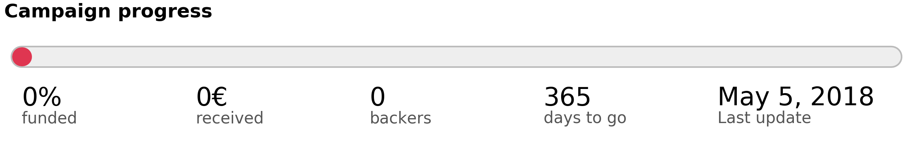

Python & OpenGL for Scientific Visualization
Copyright (c) 2018 - Nicolas P. Rougier <Nicolas.Rougier@inria.fr>


Preface
.
This book is open-access (i.e. it's free to read at this address) because I believe knowledge should be free. However, if you think the book is worth a few dollars (5€ or 10€), you can use Paypal to make payment. This money will help me to travel to Python conferences and to write other books as well. If you don't have money, it's fine. Just enjoy the book and spread the word about it. The teaser image above comes from the artwork section of my website. It has been made some years ago using the Povray (Persistence of Vision) raytracer. I like it very much because it is a kind of résumé of my research.
About the author
I am a full-time research scientist at Inria which is the French national institute for research in computer science and control. This is a public scientific and technological establishment (EPST) under the double supervision of the Research & Education Ministry, and the Ministry of Economy Finance and Industry. I'm working within the Mnemosyne project which lies at the frontier between integrative and computational neuroscience in association with the Institute of Neurodegenerative Diseases, the Bordeaux laboratory for research in computer science (LaBRI), the University of Bordeaux and the national center for scientific research (CNRS).
I've been using Python for more than 15 years and numpy for more than 10 years for modeling in neuroscience, machine learning and for advanced visualization (OpenGL). I'm the author of several online resources and tutorials (Matplotlib, numpy, OpenGL) and I've been teaching Python, numpy and scientific visualization at the University of Bordeaux and in various conferences and schools worldwide (SciPy, EuroScipy, etc). I'm also the author of the popular article Ten Simple Rules for Better Figures , a popular matplotlib tutorial and an open access book From Python To Numpy.
About this book
This book has been written in restructured text format and generated using a customized version of the docutils rst2html.py command line (available from the docutils python package) and a custom template.
If you want to rebuild the html output, from the top directory, type:
$ ./rst2html.py --link-stylesheet \
--cloak-email-addresses \
--toc-top-backlinks \
--stylesheet book.css \
--stylesheet-dirs . \
book.rst book.html
Or you use the provided make.sh shell script.
The sources are available from https://github.com/rougier/python+opengl.
Last point, I wrote the book in a kind of modern Kerouac's style such that you can download it once and continue reading it offline. Initial loading may be slow though.
Prerequisites
This is not a Python nor a NumpPy beginner guide and you should have an intermediate level in both Python and NumPy. No prior knowledge of OpenGL is necessary because I'll explain everything.
Conventions
I will use usual naming conventions. If not stated explicitly, each script should import numpy, scipy and glumpy as:
import numpy as np import scipy as sp import glumpy as gp
We'll use up-to-date versions (at the date of writing, i.e. August, 2017) of the different packages:
| Packages | Version |
|---|---|
| Python | 3.6.0 |
| Numpy | 1.12.0 |
| Scipy | 0.18.1 |
| Cython | 0.25.2 |
| Triangle | 20170106 |
| Glumpy | 1.0.6 |
How to contribute
If you want to contribute to this book, you can:
- Report issues (https://github.com/rougier/python+opengl/issues)
- Suggest improvements (https://github.com/rougier/python+opengl/pulls)
- Correct English (https://github.com/rougier/python+opengl/issues)
- Star the project (https://github.com/rougier/python+opengl)
- Suggest a more responsive design for the HTML Book
- Spread the word about this book (Reddit, Hacker News, etc.)
Publishing
If you're an editor interested in publishing this book, you can contact me if you agree to have this version and all subsequent versions open access (i.e. online at this address), you know how to deal with restructured text (Word is not an option), you provide a real added-value as well as supporting services, and more importantly, you have a truly amazing latex book template (and be warned that I'm a bit picky about typography & design: Edward Tufte is my hero). Still here?
License
Book
This work is licensed under a Creative Commons Attribution-Non Commercial-Share Alike 4.0 International License. You are free to:
- Share — copy and redistribute the material in any medium or format
- Adapt — remix, transform, and build upon the material
The licensor cannot revoke these freedoms as long as you follow the license terms.
Under the following terms:
- Attribution — You must give appropriate credit, provide a link to the license, and indicate if changes were made. You may do so in any reasonable manner, but not in any way that suggests the licensor endorses you or your use.
- NonCommercial — You may not use the material for commercial purposes.
- ShareAlike — If you remix, transform, or build upon the material, you must distribute your contributions under the same license as the original.
Code
The code is licensed under the OSI-approved BSD 2-Clause License.
Buy the book
As you may have realized by now, the book is free for you to read online. However, some people prefer to have a PDF version or even a dead-tree version. For this to happen, I need to design a latex template for producing a nice PDF. That's a lot of work and I don't really have time since I'm also (and mainly) a researcher with several students to supervise, researches to do, grants to write, talks to prepare, etc.
Consequently, if you really want to have a PDF version, you'll have to explicitly express your interest by contributing a small amount of money. Then,
- if the total reach 5,000 euros, I'll produce the PDF
- if the total reach 10,000 euros, I'll have the book printed and sold (20 euros).
However, be warned that you won't get refund if the first goal is not reached. In such case, consider your payment as a donation to the online version. If you find this unfair, remember you have the choice to give or not and the online version is free and open source...
Introduction
.
Before diving into OpenGL programming, it is important to have a look at the whole GL landscape because it is actually quite complex and you can easily lose yourself between the different actors, terms and definitions. The teaser image above shows the face of a character from the Wolfenstein game, one from 1992 and the other from 2015. You can see that computer graphics has evolved a lot in 25 years.
A bit of history
OpenGL is 25 years old! Since the first release in 1992, a lot has happened (and is still happening actually, with the newly released Vulkan API and the 4.6 GL release) and consequently, before diving into the book, it is important to understand OpenGL API evolution over the years. If the first API (1.xx) has not changed too much in the first twelve years, a big change occurred in 2004 with the introduction of the dynamic pipeline (OpenGL 2.x), i.e. the use of shaders that allow to have direct access to the GPU. Before this version, OpenGL was using a fixed pipeline that made it easy to rapidly prototype some ideas. It was simple but not very powerful because the user had not much control over the graphic pipeline. This is the reason why it has been deprecated more than ten years ago and you don't want to use it today. Problem is that there are a lot of tutorials online that still use this fixed pipeline and because most of them were written before modern GL, they're not even aware (and cannot) that they use a deprecated API.
How to know if a tutorial address the fixed pipeline ? It's relatively easy. It'll contain GL commands such as:
glVertex, glColor, glLight, glMaterial, glBegin, glEnd, glMatrix, glMatrixMode, glLoadIdentity, glPushMatrix, glPopMatrix, glRect, glPolygonMode, glBitmap, glAphaFunc, glNewList, glDisplayList, glPushAttrib, glPopAttrib, glVertexPointer, glColorPointer, glTexCoordPointer, glNormalPointer, glRotate, glTranslate, glScale, glMatrixMode, glCall,
If you see any of them in a tutorial, run away because it it's most certainly a tutorial that address the fixed pipeline and you don't want to read it because what you will learn is already useless. If you look at the GL history below, you'll realize that the "modern" GL API is already 13 years old while the fixed pipeline has been deprecated more than 10 years ago.
1 2 Modern 2
9 0 OpenGL 0 Vulkan
9 0 ↓ 1 ↓
2 3 4 5 6 7 8 9 0 1 2 3 4 5 6 7 8 9 0 1 2 3 4 5 6 7
─────────────────────────────────────┬───────────────────────────────────┬────
OpenGL 3.3
4.0
3.1
1.2 1.4 2.0 3.2 4.2 4.4
1.0 1.1 1.3 1.5 2.1 3.0 4.1 4.3 4.5 4.6
╌╌╌╌╌╌╌╌╌╌╌╌╌╌╌╌╌╌╌╌╌╌╌╌╌╌╌╌╌╌╌╌╌╌╌╌╌┬╌╌╌╌╌╌╌╌╌╌╌╌╌╌╌╌╌╌╌╌╌╌╌╌╌╌╌╌╌╌╌╌╌╌╌╌╌╌╌╌
Fixed pipeline ╎ Programmable pipeline
╌╌╌╌╌╌╌╌╌╌╌╌╌╌╌╌╌╌╌╌╌╌╌╌╌╌╌╌╌╌╌╌╌╌╌╌╌┴╌╌╌╌╌╌╌╌╌╌╌╌╌╌╌╌╌╌╌╌╌╌╌╌╌╌╌╌╌╌╌╌╌╌╌╌╌╌╌╌
GLES ╭─────╮ 3.2
1.0 │ 2.0 │ 3.0 3.1
╰─────╯
╌╌╌╌╌╌╌╌╌╌╌╌╌╌╌╌╌╌╌╌╌╌╌╌╌╌╌╌╌╌╌╌╌╌╌╌╌╌╌╌╌╌╌╌╌╌╌╌╌╌╌╌╌╌╌╌╌╌╌╌╌╌╌╌╌╌╌╌╌╌╌╌╌╌╌╌╌╌
GLSL 4.0 4.3 4.5 4.6
1.3 4.1 4.4
1.4 4.2
1.1 1.2 1.5
╌╌╌╌╌╌╌╌╌╌╌╌╌╌╌╌╌╌╌╌╌╌╌╌╌╌╌╌╌╌╌╌╌╌╌╌╌╌╌╌╌╌╌╌╌╌╌╌╌╌╌╌╌╌╌╌╌╌╌╌╌╌╌╌╌╌╌╌╌╌╌╌╌╌╌╌╌╌
WebGL 1.0 2.0
╌╌╌╌╌╌╌╌╌╌╌╌╌╌╌╌╌╌╌╌╌╌╌╌╌╌╌╌╌╌╌╌╌╌╌╌╌╌╌╌╌╌╌╌╌╌╌╌╌╌╌╌╌╌╌╌╌╌╌╌╌╌╌╌╌╌╌╌╌╌╌╌╌╌╌╌╌╌
Vulkan 1.0
──────────────────────────────────────────────────────────────────────────────
From OpenGL wiki: In 1992, Mark Segal and Kurt Akeley authored the OpenGL 1.0 specification which formalized a graphics API and made cross platform 3rd party implementation and support viable. In 2004, OpenGL 2.0 incorporated the significant addition of the OpenGL Shading Language (also called GLSL), a C like language with which the transformation and fragment shading stages of the pipeline can be programmed. In 2008, OpenGL 3.0 added the concept of deprecation: marking certain features as subject to removal in later versions.
- Open Graphics Library (OpenGL)
- OpenGL is a cross-language, cross-platform application programming interface (API) for rendering 2D and 3D vector graphics. The API is typically used to interact with a graphics processing unit (GPU), to achieve hardware-accelerated rendering.
- OpenGL for Embedded Systems (OpenGL ES or GLES)
- GLES is a subset of the OpenGL computer graphics rendering application programming interface (API) for rendering 2D and 3D computer graphics such as those used by video games, typically hardware-accelerated using a graphics processing unit (GPU).
- OpenGL Shading Language (GLSL)
- GLSL is a high-level shading language with a syntax based on the C programming language. It was created by the OpenGL ARB (OpenGL Architecture Review Board) to give developers more direct control of the graphics pipeline
- Web Graphics Library (WebGL)
- WebGL is a JavaScript API for rendering 3D graphics within any compatible web browser without the use of plug-ins. WebGL is integrated completely into all the web standards of the browser allowing GPU accelerated usage of physics and image processing and effects as part of the web page canvas.
- Vulkan (VK)
- Vulkan is a low-overhead, cross-platform 3D graphics and compute API first announced at GDC 2015 by the Khronos Group. Like OpenGL, Vulkan targets high-performance realtime 3D graphics applications such as video games and interactive media across all platforms, and can offer higher performance and more balanced CPU/GPU usage, much like Direct3D 12 and Mantle.
For this book, we'll use the GLES 2.0 API that allows to use the modern GL API while staying relatively simple. For comparison, have a look at the table below that gives the number of functions and constants for each version of the GL API. Note that once you'll master the GLES 2.0, it's only a matter of reading the documentation to take advantage of more advanced version because the core concepts remain the same (which is not the case for the new Vulkan API).
Note
The number of functions and constants have been computed using the code/chapter-02/registry.py program that parses the gl.xml file that defines the OpenGL and OpenGL API Registry
| Version | Constants | Functions | Version | Constants | Functions | |
|---|---|---|---|---|---|---|
| GL 1.0 | 0 | 306 | GL 3.2 | 800 | 316 | |
| GL 1.1 | 528 | 336 | GL 3.3 | 816 | 344 | |
| GL 1.2 | 569 | 340 | GL 4.0 | 894 | 390 | |
| GL 1.3 | 665 | 386 | GL 4.1 | 929 | 478 | |
| GL 1.4 | 713 | 433 | GL 4.2 | 1041 | 490 | |
| GL 1.5 | 763 | 452 | GL 4.3 | 1302 | 534 | |
| GL 2.0 | 847 | 545 | GL 4.4 | 1321 | 543 | |
| GL 2.1 | 870 | 551 | GL 4.5 | 1343 | 653 | |
| GL 3.0 | 1104 | 635 | GLES 1.0 | 333 | 106 | |
| GL 3.1 | 1165 | 647 | GLES 2.0 | 301 | 142 |
Modern OpenGL
The graphic pipeline
Note
The shader language is called glsl. There are many versions that goes from 1.0 to 1.5 and subsequent version get the number of OpenGL version. Last version is 4.6 (June 2017).
If you want to understand modern OpenGL, you have to understand the graphic pipeline and shaders. Shaders are pieces of program (using a C-like language) that are build onto the GPU and executed during the rendering pipeline. Depending on the nature of the shaders (there are many types depending on the version of OpenGL you're using), they will act at different stage of the rendering pipeline. To simplify this tutorial, we'll use only vertex and fragment shaders as shown below:

A vertex shader acts on vertices and is supposed to output the vertex
position (gl_Position) on the viewport (i.e. screen). A fragment shader
acts at the fragment level and is supposed to output the color
(gl_FragColor) of the fragment. Hence, a minimal vertex shader is:
void main() { gl_Position = vec4(0.0,0.0,0.0,1.0); }
while a minimal fragment shader would be:
void main() { gl_FragColor = vec4(0.0,0.0,0.0,1.0); }
These two shaders are not very useful because the first shader will always
output the null vertex (gl_Position is a special variable) while the second
will only output the black color for any fragment (gl_FragColor is also a
special variable). We'll see later how to make them to do more useful things.
One question remains: when are those shaders executed exactly ? The vertex shader is executed for each vertex that is given to the rendering pipeline (we'll see what does that mean exactly later) and the fragment shader is executed on each fragment (= pixel) that is generated after the vertex stage. For example, in the simple figure above, the vertex would be called 3 times, once for each vertex (1,2 and 3) while the fragment shader would be executed 21 times, once for each fragment.
Buffers
The next question is thus where do those vertices comes from ? The idea of modern GL is that vertices are stored on the GPU and needs to be uploaded to the GPU before rendering. The way to do that is to build buffers onto the CPU and to send these buffers onto the GPU. If your data does not change, no need to upload them again. That is the big difference with the previous fixed pipeline where data were uploaded at each rendering call (only display lists were built into GPU memory).
But what is the structure of a vertex ? OpenGL does not assume anything about your vertex structure and you're free to use as many information you may need for each vertex. The only condition is that all vertices from a buffer have the same structure (possibly with different content). This again is a big difference with the fixed pipeline where OpenGL was doing a lot of complex rendering stuff for you (projections, lighting, normals, etc.) with an implicit fixed vertex structure. The good news is that you're now free to do anything you want, but the bad news is that you have to program just everything.
Let's take a simple example of a vertex structure where we want each vertex to hold a position and a color. The easiest way to do that in python is to use a structured array using numpy:
data = numpy.zeros(4, dtype = [ ("position", np.float32, 3), ("color", np.float32, 4)] )
We just created a CPU buffer with 4 vertices, each of them having a
position (3 floats for x,y,z coordinates) and a color (4 floats for
red, blue, green and alpha channels). Note that we explicitly chose to have 3
coordinates for position but we may have chosen to have only 2 if were to
work in two-dimensions. Same holds true for color. We could have used
only 3 channels (r,g,b) if we did not want to use transparency. This would save
some bytes for each vertex. Of course, for 4 vertices, this does not really
matter but you have to realize it will matter if you data size grows up to
one or ten million vertices.
Variables
Now, we need to explain our shaders what to do with these buffers and how to connect them together. So, let's consider again a CPU buffer of 4 vertices using 2 floats for position and 4 floats for color:
data = numpy.zeros(4, dtype = [ ("position", np.float32, 2), ("color", np.float32, 4)] )
We need to tell the vertex shader that it will have to handle vertices where a position is a tuple of 2 floats and color is a tuple of 4 floats. This is precisely what attributes are meant for. Let us change slightly our previous vertex shader:
attribute vec2 position; attribute vec4 color; void main() { gl_Position = vec4(position, 0.0, 1.0); }
This vertex shader now expects a vertex to possess 2 attributes, one named
position and one named color with specified types (vec3 means tuple of
3 floats and vec4 means tuple of 4 floats). It is important to note that even
if we labeled the first attribute position, this attribute is not yet bound
to the actual position in the numpy array. We'll need to do it explicitly
at some point in our program and there is no magic that will bind the numpy
array field to the right attribute, you'll have to do it yourself, but we'll
see that later.
The second type of information we can feed the vertex shader is the uniform
that may be considered as constant value (across all the vertices). Let's say
for example we want to scale all the vertices by a constant factor scale,
we would thus write:
uniform float scale; attribute vec2 position; attribute vec4 color; void main() { gl_Position = vec4(position*scale, 0.0, 1.0); }
Last type is the varying type that is used to pass information between the vertex stage and the fragment stage. So let us suppose (again) we want to pass the vertex color to the fragment shader, we now write:
uniform float scale; attribute vec2 position; attribute vec4 color; varying vec4 v_color; void main() { gl_Position = vec4(position*scale, 0.0, 1.0); v_color = color; }
and then in the fragment shader, we write:
varying vec4 v_color; void main() { gl_FragColor = v_color; }
The question is what is the value of v_color inside the fragment shader ?
If you look at the figure that introduced the gl pipeline, we have 3 vertices
and 21 fragments. What is the color of each individual fragment ?
The answer is the interpolation of all 3 vertices color. This interpolation is made using distance of the fragment to each individual vertex. This is a very important concept to understand. Any varying value is interpolated between the vertices that compose the elementary item (mostly, line or triangle).
Ok, enough for now, we'll see an explicit example in the next chapter.
State of the union
Last, but not least, we need to access the OpenGL library from within Python and we have mostly two solutions at our disposal. Either we use pure bindings and we have to program everything (see next chapter) or we use an engine that provide a lot of convenient functions that ease the development. We'll first use the PyOpenGL bindings before using the glumpy library that offers a tight integration with numpy.
Bindings
- Pyglet is a pure python cross-platform application framework intended for game development. It supports windowing, user interface event handling, OpenGL graphics, loading images and videos and playing sounds and music. It works on Windows, OS X and Linux.
- PyOpenGL is the most common cross platform Python binding to OpenGL and related APIs. The binding is created using the standard ctypes library, and is provided under an extremely liberal BSD-style Open-Source license.
- ModernGL is a wrapper over OpenGL that simplifies the creation of simple graphics applications like scientific simulations, small games or user interfaces. Usually, acquiring in-depth knowledge of OpenGL requires a steep learning curve. In contrast, ModernGL is easy to learn and use, moreover it is capable of rendering with the same performance and quality, with less code written.
- Ctypes bindings can also be generated quite easily thanks to the gl.xml file provided by the Khronos group that defines the OpenGL and OpenGL API Registry. The number of functions and constants given in the table above have been computed using the code/chapter-02/registry.py program that parses the gl.xml file for each API and version and count the relevant features.
Engines
- The Visualization Toolkit (VTK) is an open-source, freely available software system for 3D computer graphics, image processing, and visualization. It consists of a C++ class library and several interpreted interface layers including Tcl/Tk, Java, and Python.
- Processing is a programming language, development environment, and online community. Since 2001, Processing has promoted software literacy within the visual arts and visual literacy within technology. Today, there are tens of thousands of students, artists, designers, researchers, and hobbyists who use Processing for learning, prototyping, and production.
- NodeBox for OpenGL is a free, cross-platform library for generating 2D animations with Python programming code. It is built on Pyglet and adopts the drawing API from NodeBox for Mac OS X. It has built-in support for paths, layers, motion tweening, hardware-accelerated image effects, simple physics and interactivity.
- Panda3D is a 3D engine: a library of subroutines for 3D rendering and game development. The library is C++ with a set of Python bindings. Game development with Panda3D usually consists of writing a Python or C++ program that controls the Panda3D library.
- VPython makes it easy to create navigable 3D displays and animations, even for those with limited programming experience. Because it is based on Python, it also has much to offer for experienced programmers and researchers.
Libraries
Note
Even though glumpy and vispy shares a number of concept, they are different. vispy offers a high-level interface that may be convenient in some situations but this tends to hide the internal machinery. This is one of the reason we'll be using glumpy instead (the other reason being that I'm the author of glumpy (and one of the author of vispy as well in fact)).
- Glumpy is a python library for scientific visualization that is both fast, scalable and beautiful. Glumpy leverages the computational power of modern Graphics Processing Units (GPUs) through the OpenGL library to display very large datasets and offers an intuitive interface between numpy and modern OpenGL. We'll use it extensively in this book.
- Vispy is the sister project of glumpy. It is a high-performance interactive 2D/3D data visualization library and offer a high-level interface for scientific visualization. The difference between glumpy and vispy is approximately the same as the difference between numpy and scipy even though vispy is independent of glumpy and vice-versa.
Quickstart
.
For the really impatient, you can try to run the code in the teaser image above. If this works, a window should open on your desktop with a red color in the background. If you now want to understand how this works, you'll have to read the text below.
Preliminaries
The main difficulty for newcomers in programming modern OpenGL is that it requires to underdtand a lot of different concepts at once and then, to perform a lot of operations before rendering anything on screen. This complexity implies that there are many places where your code can be wrong, both at the conceptual and code level. To illustrate this difficulty, we'll program our first OpenGL program using the raw interface and our goal is to display a simple colored quad (i.e. a red square).
Normalize Device Coordinates

Figure
Before even diving into actual code, it is important to understand first how
OpenGL handles coordinates. More precisely, OpenGL considers only coordinates
(x,y,z) that fall into the space where -1 ≤ x,y,z ≤ +1. Any coordinates
that are outside this range will be discarded or clipped (i.e. won't be visible
on screen). This is called Normalized Device Coordinates, or NDC for short.
This is something you cannot change because it is part of the OpenGL API and
implemented in your hardware (GPU). Consequently, even if you intend to render
the whole universe, you'll have utlimately to fit it into this small volume.
The second important fact to know is that x coordinates increase from left to right and y coordinates increase from bottom to top. For this latter one, it is noticeably different from the usual convention and this might induce some problems, especially when you're dealing with the mouse pointer whose y coordinate goes this other way around.
Triangulation

Figure
Triangulation of a surface means to find a set of triangles, which covers a given surface. This can be a tedious process but fortunately, there exist many different methods and algorithms to perform such triangulation automatically for any 2D or 3D surface. The quality of the triangulation is measured in term of the closeness to the approximated surface, the number of triangles necessary (the smaller, the better) and the homogeneity of the triangles (we prefer to have triangles that have more or less the same size and to not have any degenerated triangle).
In our case, we want to render a square and we need to find the proper triangulation (which is not unique as illustrated on the figure). Since we want to minimize the number of triangles, we'll use the 2 triangles solution that requires only 4 (shared) vertices corresponding to the four corners of the quad. However, you can see of the figure that we could have used different triangulations using more vertices, and later in this book we will just do that (but for a reason).
Considering the NDC, our quad will thus be composed of two triangles:
- One triangle described by vertices
(-1,+1), (+1,+1), (-1,-1) - One triangle described by vertices
(+1,+1), (-1,-1), (+1,-1)
Here we can see that vertices (-1,-1) and (+1,+1) are structurally the
same. So instead of using 6 vertices to describe the two triangles, we can
re-use the common vertices to describe the whole quad. Let's name them:
V₀:(-1,+1)V₁:(+1,+1)V₂:(-1,-1)V₃:(+1,-1)
Our quad can now be using triangle (V₀,V₁,V₂) and triangle (V₁,V₂,V₃). This
is exactly what we need to tell OpenGL.
GL Primitives

Figure
Ok, now things are getting serious because we need to actually tell OpenGL what to do with the vertices, i.e. how to render them? what do they describe in term of geometrical primitives? This is quite an important topic since this will determines how fragments will be actually generated as illustrated on the image below:
Mostly, OpenGL knows how to draw (ugly) point, (ugly) lines and ugly
(triangles). For lines and triangles, there exist some variations depending if
you want to specify very precisely what to draw or if you can take advantage of
some implicit assumptions. Let's consider lines first for example. Given a set
of four vertices (V₀,V₁,V₂,V₃), you migh want to draw segments
(V₀,V₁)``(V₂,V₃) using GL_LINES or a broken line (V₀,V₁,V₂,V₃) using
using GL_LINE_STRIP or a closed broken line (V₀,V₁,V₂,V₃,V₀,) using
GL_LINE_LOOP. For triangles, you have the choices of specifying each triangle
individually using GL_TRIANGLES or you can tell OpenGL that triangles follow
an implicit structure using GL_TRIANGLE_STRIP. For example, considering a set
of vertices (Vᵢ), GL_TRIANGLE_STRIP will produce triangles (Vᵢ,Vᵢ₊₁,Vᵢ₊₂).
There exist other primitives but we won't used them in this book because
they're mainly related to geometry shaders that are not introduced.
If you remember the previous section where we explained that our quad can be
described using using triangle (V₀,V₁,V₂) and triangle (V₁,V₂,V₃), you can
now realize that we can take advantage or the GL_TRIANGLE_STRIP primitive
because we took care of describing the two triangles following this implicit
structure.
Interpolation

Figure
f of a fragment p is given by f = 𝛌₁f₁ +
𝛌₂f₂ + 𝛌₃f₃The choice of the triangle as the only surface primitive is not arbitrary
choice because a triangle offers the possibility of having a nice and intuitive
interpolation of any point that is inside the triangle. If you look back at
the graphic pipeline as it has been introduced in the Modern OpenGL section,
you can see that the rasterisation requires for OpenGL to generate fragments
inside the triangle but also to interpolate values (colors on the figure). One
of the legitimate question to be solved is then: if I have a triangle
(V₁,V₂,V₃), each summit vertex having (for example) a different color, what is
the color of a fragment p inside the triangle? The answer is barycentric
interpolation
as illustrated on the figure on the right.
More precisely, for any point p inside a triangle A = (V₁,V₂,V₃), we consider
triangles:
A₁ = (P,V₂,V₃)A₂ = (P,V₁,V₃)A₃ = (P,V₁,V₂)
And we can define (using area of triangles):
𝛌₁ = A₁/A𝛌₂ = A₂/A𝛌₃ = A₃/A
Now, if we attach a value f₁ to vertex V₁, f₂ to vertex V₂ and f₃ to
vertex V₃, the interpolated value f of p is given by: f = 𝛌₁f₁ + 𝛌₂f₂ +
𝛌₃f₃ You can check by yourself that if the point p is on a border of the
triangle, the resulting interpolated value f is the linear interpolation of
the two vertices defining the segment the point p belongs to.
This barycentric interpolation is important to understand even if it is done automatically by OpenGL (with some variation to take projection into account). We took the example of colors, but the same interpolation scheme holds true for any value you pass from the vertex shader to the fragment shader. And this property will be used and abused in this book.
The hard way
Having reviewed some important OpenGL concepts, it's time to code our quad example. But, before even using OpenGL, we need to open a window with a valid GL context. This can be done using toolkit such as Gtk, Qt or Wx or any native toolkit (Windows, Linux, OSX). Unfortunately, the Tk Python interface does not allow to create a GL context and we cannot use it. Note there also exists dedicated toolkits such as GLFW or GLUT and the advantage of GLUT is that it's already installed alongside OpenGL. Even if it is now deprecated, we'll use GLUT since it's a very lightweight toolkit and does not require any extra package. Here is a minimal setup that should open a window with garbage on it (since we do not even clear the window):
import sys import OpenGL.GL as gl import OpenGL.GLUT as glut def display(): glut.glutSwapBuffers() def reshape(width,height): gl.glViewport(0, 0, width, height) def keyboard( key, x, y ): if key == 'b'\x1b': sys.exit( ) glut.glutInit() glut.glutInitDisplayMode(glut.GLUT_DOUBLE | glut.GLUT_RGBA) glut.glutCreateWindow('Hello world!') glut.glutReshapeWindow(512,512) glut.glutReshapeFunc(reshape) glut.glutDisplayFunc(display) glut.glutKeyboardFunc(keyboard) glut.glutMainLoop()
Note
You won't have access to any GL command before the glutInit() has been
executed because no OpenGL context will be available before this command is
executed.
The glutInitDisplayMode tells OpenGL what are the GL context properties. At
this stage, we only need a swap buffer (we draw on one buffer while the other
is displayed) and we use a full RGBA 32 bits color buffer (8 bits per channel).
The reshape callback informs OpenGL of the new window size while the
display method tells OpenGL what to do when a redraw is needed. In this
simple case, we just ask OpenGL to swap buffers (this avoids flickering).
Finally, the keyboard callback allows us to exit by pressing the Escape key.
Writing shaders
Now that your window has been created, we can start writing our program, that
is, we need to write a vertex and a fragment shader. For the vertex shader, the
code is very simple because we took care of using the normalized device
coordinates to describe our quad in the previous section. This means vertices
do not need to be transformed. Nonetheless, we have to take care of sending 4D
coordinates even though we'll transmit only 2D coordinates (x,y) or the final
result will be undefined. For coordinate z we'll just set it to 0.0 (but
any value would do) and for coordinate w, we set it to 1.0 (see section
Basic Mathematics for the explanation). Note also the (commented)
alternative ways of writing the shader.
attribute vec2 position; void main() { gl_Position = vec4(position, 0.0, 1.0); // or gl_Position.xyzw = vec4(position, 0.0, 1.0); // or gl_Position.xy = position; // gl_Position.zw = vec2(0.0, 1.0); // or gl_Position.x = position.x; // gl_Position.y = position.y; // gl_Position.z = 0.0; // gl_Position.w = 1.0; }
For the fragment shader, it is even simpler. We set the color to red which is
described by the tuple (1.0, 0.0, 0.0, 1.0) in normalized RGBA
notation. 1.0 for alpha channel means fully opaque.
void main() { gl_FragColor = vec4(1.0, 0.0, 0.0, 1.0); // or gl_FragColor.rgba = vec4(1.0, 0.0, 0.0, 1.0); // or gl_FragColor.rgb = vec3(1.0, 0.0, 0.0); // gl_FragColor.a = 1.0; }
Compiling the program
We wrote our shader and we need now to build a program that will link the vertex and the fragment shader together. Building such program is relatively straightforward (provided we do not check for errors). First we need to request program and shader slots from the GPU:
program = gl.glCreateProgram() vertex = gl.glCreateShader(gl.GL_VERTEX_SHADER) fragment = gl.glCreateShader(gl.GL_FRAGMENT_SHADER)
We can now ask for the compilation of our shaders into GPU objects and we log for any error from the compiler (e.g. syntax error, undefined variables, etc):
vertex_code = """ attribute vec2 position; void main() { gl_Position = vec4(position, 0.0, 1.0); } """ fragment_code = """ void main() { gl_FragColor = vec4(1.0, 0.0, 0.0, 1.0); } """ # Set shaders source gl.glShaderSource(vertex, vertex_code) gl.glShaderSource(fragment, fragment_code) # Compile shaders gl.glCompileShader(vertex) if not gl.glGetShaderiv(vertex, gl.GL_COMPILE_STATUS): error = gl.glGetShaderInfoLog(vertex).decode() print(error) raise RuntimeError("Vertex shader compilation error") gl.glCompileShader(fragment) if not gl.glGetShaderiv(fragment, gl.GL_COMPILE_STATUS): error = gl.glGetShaderInfoLog(fragment).decode() print(error) raise RuntimeError("Fragment shader compilation error")
Then we link our two objects in into a program and again, we check for errors during the process.
gl.glAttachShader(program, vertex) gl.glAttachShader(program, fragment) gl.glLinkProgram(program) if not gl.glGetProgramiv(program, gl.GL_LINK_STATUS): print(gl.glGetProgramInfoLog(program)) raise RuntimeError('Linking error')
and we can get rid of the shaders, they won't be used again (you can think of
them as .o files in C).
gl.glDetachShader(program, vertex) gl.glDetachShader(program, fragment)
Finally, we make program the default program to be ran. We can do it now because we'll use a single program in this example:
gl.glUseProgram(program)
Uploading data to the GPU
Next, we need to build CPU data and the corresponding GPU buffer that will hold
a copy of the CPU data (GPU cannot access CPU memory). In Python, things are
grealty facilitated by NumPy that allows to have a precise control over number
representations. This is important because GLES 2.0 floats have to be exactly
32 bits long and a regular Python float would not work (they are actually
equivalent to a C double). So let us specify a NumPy array holding 4×2
32-bits float that will correspond to our 4×(x,y) vertices:
# Build data data = np.zeros((4,2), dtype=np.float32))
Wen then create a placeholder on the GPU without yet specifying the size:
# Request a buffer slot from GPU buffer = gl.glGenBuffers(1) # Make this buffer the default one gl.glBindBuffer(gl.GL_ARRAY_BUFFER, buffer)
We now need to bind the buffer to the program, that is, for each attribute present in the vertex shader program, we need to tell OpenGL where to find the corresponding data (i.e. GPU buffer) and this requires some computations. More precisely, we need to tell the GPU how to read the buffer in order to bind each value to the relevant attribute. To do this, GPU needs to kow what is the stride between 2 consecutive element and what is the offset to read one attribute:
1ˢᵗ vertex 2ⁿᵈ vertex 3ʳᵈ vertex …
┌───────────┬───────────┬───────────┬┄┄
┌─────┬─────┬─────┬─────┬─────┬─────┬─┄
│ X │ Y │ X │ Y │ X │ Y │ …
└─────┴─────┴─────┴─────┴─────┴─────┴─┄
offset 0 → │ (x,y) └───────────┘
stride
In our simple quad scenario, this is relatively easy to write because we have a
single attribute ("position"). We first requires the attribute location
inside the program and then we bind the buffer with the relevant offset.
stride = data.strides[0] offset = ctypes.c_void_p(0) loc = gl.glGetAttribLocation(program, "position") gl.glEnableVertexAttribArray(loc) gl.glBindBuffer(gl.GL_ARRAY_BUFFER, buffer) gl.glVertexAttribPointer(loc, 2, gl.GL_FLOAT, False, stride, offset)
We're basically telling the program how to bind data to the relevant attribute. This is made by providing the stride of the array (how many bytes between each record) and the offset of a given attribute.
Let's now fill our CPU data and upload it to the newly created GPU buffer:
# Assign CPU data data[...] = (-1,+1), (+1,+1), (-1,-1), (+1,-1) # Upload CPU data to GPU buffer gl.glBufferData(gl.GL_ARRAY_BUFFER, data.nbytes, data, gl.GL_DYNAMIC_DRAW)
Rendering
We're done, we can now rewrite the display function:
def display(): gl.glClear(gl.GL_COLOR_BUFFER_BIT) gl.glDrawArrays(gl.GL_TRIANGLE_STRIP, 0, 4) glut.glutSwapBuffers()

Figure
The 0,4 arguments in the glDrawArrays tells OpenGL we want to display 4
vertices from our current active buffer and we start at vertex 0. You should
obtain the figure on the right with the same red (boring) color. The whole
source ia available from code/chapter-03/glut-quad-solid.py.
All these operations are necessary for displaying a single colored quad on screen and complexity can escalate pretty badly if you add more objects, projections, lighting, texture, etc. This is the reason why we'll stop using the raw OpenGL interface in favor of a library. We'll use the glumpy library, mostly because I wrote it, but also because it offers a tight integration with numpy. Of course, you can design your own library to ease the writing of GL Python applications.
Uniform color

Figure
uniform variable specifying the color of the
quad.In the previous example, we hard-coded the red color inside the fragment shader
source code. But what if we want to change the color from within the Python
program? We could rebuild the program with the new color but that would not be
very efficient. Fortunately there is a simple solution provided by OpenGL:
uniform. Uniforms, unlike attributes, do not change from one vertex to the
other and this is precisely what we need in our case. We thus need to slightly
modify our fragment shader to use this uniform color:
uniform vec4 color; void main() { gl_FragColor = color; }
Of course, we also need to upload a color to this new uniform location and this is easier than for attribute because the memory has already been allocated on the GPU (since the size is know and does not depend on the number of vertices).
loc = gl.glGetUniformLocation(program, "color") gl.glUniform4f(loc, 0.0, 0.0, 1.0, 1.0)
If you run the new code/glut-quad-uniform-color.py example, you should obtain the blue quad as shown on the right.
Varying color

Figure
Until now, we have been using a constant color for the four vertices of our quad and the result is (unsuprinsingly) a boring uniform red or blue quad. We can make a bit more interesting though by assigning different colors for each vertex and see how OpenGL will interpolate colors. Our new vertex shader would need to be rewritten as:
attribute vec2 position; attribute vec4 color; varying vec4 v_color; void main() { gl_Position = vec4(position, 0.0, 1.0); v_color= color; }
We just added our new attribute color but we also added a new variable type:
varying. This type is actually used to transmit a value from the vertex
shader to the fragment shader. As you might have guessed, the varying type
means this value won't be constant over the different fragments but will be
interpolated depending on the relative position of the fragment in the
triangle, as I explained in the Interpolation section. Note that we also
have to rewrite our fragment shader accordingly, but now the v_color will be
an input:
varying vec4 v_color; void main() { gl_FragColor = color; }
We now need to upload vertex color to the GPU. We could create a new vertex
dedicated buffer and bind it to the new color attribute, but there is a more
interesting solution. We'll use instead a single numpy array and a single buffer,
taking advantage of the NumPy structured array:
data = np.zeros(4, [("position", np.float32, 2), ("color", np.float32, 4)]) data['position'] = (-1,+1), (+1,+1), (-1,-1), (+1,-1) data['color'] = (0,1,0,1), (1,1,0,1), (1,0,0,1), (0,0,1,1)
Our CPU data structure is thus:
1ˢᵗ vertex 2ⁿᵈ vertex
┌───────────────────────┬───────────────────────┬┄
┌───┬───┬───┬───┬───┬───┬───┬───┬───┬───┬───┬───┬─┄
│ X │ Y │ R │ G │ B │ A │ X │ Y │ R │ G │ B │ A │ …
└───┴───┴───┴───┴───┴───┴───┴───┴───┴───┴───┴───┴─┄
↑ ↑ └───────────────────────┘
position color stride
offset offset
Binding the buffer is now a bit more complicated but it is made relatively easy thanks to NumPy:
stride = data.strides[0] offset = ctypes.c_void_p(0) loc = gl.glGetAttribLocation(program, "position") gl.glEnableVertexAttribArray(loc) gl.glBindBuffer(gl.GL_ARRAY_BUFFER, buffer) gl.glVertexAttribPointer(loc, 2, gl.GL_FLOAT, False, stride, offset) offset = ctypes.c_void_p(data.dtype["position"].itemsize) loc = gl.glGetAttribLocation(program, "color") gl.glEnableVertexAttribArray(loc) gl.glBindBuffer(gl.GL_ARRAY_BUFFER, buffer) gl.glVertexAttribPointer(loc, 4, gl.GL_FLOAT, False, stride, offset)
The easy way
As we've seen in the previous section, displaying a simple quad using modern GL is quite tedious and requires a fair number of operations and this why from now on we'll use glumpy whose goal is to make this process both easy and intuitive.
Glumpy is organized around three main modules:
- The Application layer (
app) package is responsible for opening a window and handling user events such as mouse and keyboard interactions. - The OpenGL object oriented layer (
gloo) package is responsible for handling shader programs and syncing CPU/GPU data through the numpy interface. - The Graphic layer (
graphics) package provides higher-level common objects such as text, collections and widgets.
Those modules will help us writing any OpenGL program quite easily. Let's consider again our quad example:
Note
Glumpy will look for any available backend in a given order, starting by GLFW. I strongly advise to install the GLFW package on your system since this backend is activately maintainted and "just works".
We still need to open a window, but now this is straightforward:
from glumpy import app, gloo, gl # Create a window with a valid GL context window = app.Window()
If necessary, you can also indicate which backend to use by writing
app.choose("glfw") before creating the window. The creation of the program is
also straightforward:
# Build the program and corresponding buffers (with 4 vertices) quad = gloo.Program(vertex, fragment, count=4)
With the above line, both the CPU data and GPU data (buffer) have been created
and no extra command is necessary at this stage and uploading the data is only
a matter of setting the different fields of the quad program:
# Upload data into GPU quad['position'] = (-1,+1), (+1,+1), (-1,-1), (+1,-1)
Under the hood, glumpy has parsed your shader programs and has identied
attributes. Rendering is just a matter of calling the draw method from our
shader program, using the proper mode.
# Tell glumpy what needs to be done at each redraw @window.event def on_draw(dt): window.clear() quad.draw(gl.GL_TRIANGLE_STRIP) # Run the app app.run()
The whole source is available in code/chapter-03/glumpy-quad-solid.py.
If you run this program using the --debug switch, you should obtain the
following output that show what is being done in the background. More
specifically, you can check that the program is actually compiled and linked
using specified shaders and that the buffer is created and bound to the
program.
[i] HiDPI detected, fixing window size [i] Using GLFW (GL 2.1) [i] Running at 60 frames/second GPU: Creating program GPU: Attaching shaders to program GPU: Creating shader GPU: Compiling shader GPU: Creating shader GPU: Compiling shader GPU: Linking program GPU: Activating program (id=1) GPU: Activating buffer (id=7) GPU: Creating buffer (id=7) GPU: Updating position GPU: Deactivating buffer (id=7) GPU: Deactivating program (id=1)
Uniform color
Adding a uniform specified color like is only a matter of modifying the
fragment shader as in the previous section an directly assigning the color to
the quad program (see code/chapter-03/glumpy-quad-uniform-color.py):
quad["color"] = 0,0,1,1
Varying color
Adding a per-vertex color like is also and only a matter of modifying the fragment shader as in the previous section an directly assigning the color to the quad program (see code/chapter-03/glumpy-quad-varying-color.py):
quad["color"] = (1,1,0,1), (1,0,0,1), (0,0,1,1), (0,1,0,1)
Exercises
Now we can play a bit with the shader and hopefully you'll understand why learning to program the dynamic graphic pipeline is worth the effort. Modifying the rendering is now a matter of writing the proper shader. We'll get a first taste in the three exercises below but we'll see much more powerful shader tricks in the next chapters.
Figure
Scaling the quad We've been using previously a uniform to pass a color to
the fragment shader, but we could have used also in the vertex shader to pass
any kind of information. In this exercise, try to modify the vertex shader in
the varying color example in
order for the quad to be animated and to scale with time as shown in the figure
on the right. You will need to update the scale factor within the Python
program, for example in the draw function.
Solution: code/chapter-03/quad-scale.py
Figure
Rotating the quad Let's now rotate the quad as in the figure on the right.
Note that you have access to the cos and sin functions from within the
shader. If you forgot your geometry, here is a quick reminder for a rotation of
angle theta around the origin (0,0) for a point (x,y):
float x2 = cos(theta)*x - sin(theta)*y; float y2 = sin(theta)*x + cos(theta)*y;
Solution: code/chapter-03/quad-rotate.py
Basic Mathematics
.
There is no way around mathematics. If you want to understand computer geometry, you need to masterize a few mathematical concepts. But not that many actually. I won't introduce everything since there is already a lot of tutorials online explaining the core concepts of linear algrebra, Euclidean geometry, homogeneous coordinates, projective geometry and quaternions (yes, those are the keywords to enter in your preferred search engine). The teaser image above comes from the Cyclopaedia, an Universal Dictionary of Arts and Sciences published by Ephraim Chambers in London in 1728 (sources History of Geometry).
Projective Geometry
Homogeneous coordinates
Even though we're dealing with the three-dimensional Euclidean space, three
dimensional coordinates are actually not the best representation we can use and
this is the reason why we will use homogeneous coordinates that describe
coordinates in a four-dimensional projective space (that includes the Euclidean
space). We'll see in the next section that this allows us to express linear
transformations (rotation, scaling), affine transformations (translations) and
projection using 4×4 matrices. Homogeneous coordinatess are tightly linked with
regular 3D coordinates with the noticeable difference that they require a
fourth w coordinate that corresponds to the fourth dimension, let's call it
the projective dimension. In order to explain it, we'll use a 1-dimensional
space where point coordinates are single scalars indicating the position of the
points onto the X-axis. This will make everything clearer hopefully.
Let us consider for example a simple set of point [-1.0, -0.5, 0.0, +0.5,
+1.0] in this unidimensional space. We want to project onto another segment
[-2,+2] that represent the screen (any point projected outside this segment
is discared and won't be visible into the final projection) The question now is
how do we project the points onto the screen?

Figure
[-1.0, -0.5, 0.0, +0.5, +1.0].To answer this question, we need to know where is the camera (from where do we
look at the scene) and where are the points positioned relatively to the
screen. This is the reason why we introduce a supplementary w coordinate in
order to indicate the distance to the screen. To go from our Euclidean
representation to our new homogeneous representation, we'll use a conventional
and default value of 1 for all the w such that our new point set is now
[(-1.0,1.0), -(0.5,1.0), (0.0,1.0), (+0.5,1.0), (+1.0,1.0)]. Reciprocally, a
point (x,w) in projective space corresponds to the point x/w (if w ≠ 0)
in our unidimensional Euclidean space. From this conversion, we can see
immediately that there exist actually an infinite set of homogenous coordinates
that correspond to a single Cartesian coordinate as illustrated on the figure.
Figure
Projections
We are now ready to project our point set onto the screen. As shown on the
figure above, we can use an orthographic (all rays are parallels) or a linear
projection (rays originate from the camera point and hit the screen, passing
through points to be projected). For these two projections, results are similar
but different. In the first case, distances have been exactly conserved while
in the second case, the distance between projected points has increased, but
projected points are still equidistant. The third projection is where
homogenous coordinates make sense. For this (abritraty) projection, we decided
that the further the point is from the origin, and the further away from the
origin its projection will be. To do that, we measure the distance of the point
to the origin and we add this distance to its w value before projecting it
(this corresponds to the black circles on the figure) using the linear
projection. It is to be noted that this new projection does not conserve the
distance relationship and if we consider the set of projected points [P(-1.0),
P(-0.5), P(0.0), P(+0.5), P(+1.0)], we have have ║P(-1.0)-P(-0.5)]║ >
║P(-0.5)- P(0.0)║.
Note
Quaternions are not homogenous coordinates even though they are usually represented in the form of a 4-tuple (a,b,c,d) that is a shortcut for the actual representation: a + bi⃗ + cj⃗ + dk⃗, where a, b, c, and d are real numbers, and i⃗, j⃗, k⃗ are the fundamental quaternion units.
Back to our regular 3D-Euclidean space, the principle remains the same and we have the following relationgship between Cartesian and homogeneous coordinates:
(x,y,z,w) → (x/w, y/w, z/w) (for w ≠ 0) Homogeneous Cartesian (x,y,z) → (x, y, z, 1) Cartesian Homogeneous
If you didn't understood everything, you can stick to the description provided by Sam Hocevar:
- If w = 1, then the vector (x,y,z,1) is a position in space
- If w = 0, then the vector (x,y,z,0) is a direction
Transformations

Figure
We'll use now homogeneous coordinates and express all our transformations using only 4×4 matrices. This will allow us to chain several transformations by multiplying transformation matrices. However, before diving into the actual definition of these matrices, we need to decide if we consider a four coordinates vector to be 4 rows and 1 column or 1 row and 4 columns. Depending on the answer, the multiplication with a matrix will happen on the left or on the right side of the vector. To be consistent with OpenGL convention, we'll consider a vector to be 4 rows and 1 columns, meaning transformations happen on the left side of vectors. To transform a vertex V by a transformation matrix M, we write: V' = M*V. To chain two transformations M1 and M2 (first M1, then M2), we write: V' = M2*M1*V which is different from V' = M1*M2*V because matrix multiplication is not communative. As clearly illustrated on the right figure, this means for example that a rotation followed by a translation is not the same as a translation followed by a rotation.
Translation
Considering a vertex V = (x, y, z, 1) and a translation vector T = (tx, ty,
tz, 0), the translation of V by T is (x+tx, y+ty, z+tz, 1). The
corresponding matrix is given below:
┌ ┐ ┌ ┐ ┌ ┐ ┌ ┐ │ 1 0 0 tx │ * │ x │ = │ 1*x + 0*y + 0*z + tx*1 │ = │ x+tx │ │ 0 1 0 ty │ │ y │ │ 0*x + 1*y + 0*z + ty*1 │ │ y+ty │ │ 0 0 1 tz │ │ z │ │ 0*x + 0*y + 1*z + tz*1 │ │ z+tz │ │ 0 0 0 1 │ │ 1 │ │ 0*x + 0*y + 0*z + 1* │ │ 1 │ └ ┘ └ ┘ └ ┘ └ ┘
Scaling
Considering a vertex V = (x, y, z, 1) and a scaling vector T = (sx, sy, sz,
0), the scaling of V by S is (sx*x, sy*y, sz*z, 1). The corresponding
matrix is given below:
┌ ┐ ┌ ┐ ┌ ┐ ┌ ┐ │ sx 0 0 0 │ * │ x │ = │ sx*x + 0*y + 0*z + 0*1 │ = │ sx*x │ │ 0 sy 0 0 │ │ y │ │ 0*x + sy*y + 0*z + 0*1 │ │ sy*y │ │ 0 0 sz 0 │ │ z │ │ 0*x + 0*y + sz*z + 0*1 │ │ sz*z │ │ 0 0 0 1 │ │ 1 │ │ 0*x + 0*y + 0*z + 1*1 │ │ 1 │ └ ┘ └ ┘ └ ┘ └ ┘
Rotation
A rotation is defined by an axis of rotation A and an angle of rotation d. We defined below only the most common rotations, that is, around the X-axis, Y-axis and Z-axis.
X-axis rotation
┌ ┐ ┌ ┐ ┌ ┐
│ 1 0 0 0 │ * │ x │ = │ 1*x + 0*y + 0*z + 0*0 │
│ cos(d) -sin(d) 0 0 │ │ y │ │ cos(d)*x - sin(d)*y + 0*z + 0*0 │
│ sin(d) cos(d) 0 0 │ │ z │ │ sin(d)*x + cos(d)*y + 0*z + 0*0 │
│ 0 0 0 1 │ │ 1 │ │ 0*x + 0*y + 0*z + 1*1 │
└ ┘ └ ┘ └ ┘
┌ ┐
= │ x │
│ cos(d)*x - sin(d)*y │
│ sin(d)*x + cos(d)*y │
│ 1 │
└ ┘
Y-axis rotation
┌ ┐ ┌ ┐ ┌ ┐
│ cos(d) 0 sin(d) 0 │ * │ x │ = │ cos(d)*x + 0*y + sin(d)*z + 0*0 │
│ 0 1 0 0 │ │ y │ │ 0*x + 1*y + 0*z + 0*0 │
│ -sin(d) 0 cos(d) 0 │ │ z │ │ -sin(d)*x + 0*y + cos(d)*z + 0*0 │
│ 0 0 0 1 │ │ 1 │ │ 0*x + 0*y + 0*z + 1*1 │
└ ┘ └ ┘ └ ┘
┌ ┐
= │ cos(d)*x - sin(d)*z │
│ y │
│ -sin(d)*x + cos(d)*z │
│ 1 │
└ ┘
Z-axis rotation
┌ ┐ ┌ ┐ ┌ ┐
│ cos(d) -sin(d) 0 0 │ * │ x │ = │ cos(d)*x - sin(d)*y + 0*z + 0*0 │
│ sin(d) cos(d) 0 0 │ │ y │ │ sin(d)*x + cos(d)*y + 0*z + 0*0 │
│ 0 0 1 0 │ │ z │ │ 0*x + 0*y + 1*z + 0*0 │
│ 0 0 0 1 │ │ 1 │ │ 0*x + 0*y + 0*z + 1*1 │
└ ┘ └ ┘ └ ┘
┌ ┐
= │ cos(d)*x - sin(d)*y │
│ sin(d)*x + cos(d)*y │
│ z │
│ 1 │
└ ┘
A word of caution
OpenGL uses a column-major representation of matrices. This mean that when reading a set of 16 contiguous values in memory, the first 4 values corresponds to the first column while in Numpy (using C default layout), this would corresponds to the first row. In order to stay consistent with most OpenGL tutorials, we'll use a column-major order in the rest of this book. This means that any glumpy transformations will appear to be transposed when displayed, but the underlying memory representation will still be consistent with OpenGL and GLSL. This is all you need to know at this stage.
Considering a set of 16 contiguous values in memory:
┌ ┐ │ a b c d e f g h i j k l m n o p │ └ ┘
We get different representations depending on the order convention (column major or row major):
column-major row-major (OpenGL) (NumPy) ┌ ┐ ┌ ┐ ┌ ┐ ┌ ┐ ┌ ┐ │ a b c d │ × │ x │ = │ x y z w │ × │ a e i m │ = │ ax + by + cz + dw │ │ e f g h │ │ y │ └ ┘ │ b f j n │ │ ex + fy + gz + hw │ │ i j k l │ │ z │ │ c g k o │ │ ix + jy + hz + lw │ │ m n o p │ │ w │ │ d h l p │ │ mx + ny + oz + pw │ └ ┘ └ ┘ └ ┘ └ ┘
For example, here is a translation matrix as returned by the
glumpy.glm.translation function:
import glumpy T = glumpy.glm.translation(1,2,3) print(T) [[ 1. 0. 0. 0.] [ 0. 1. 0. 0.] [ 0. 0. 1. 0.] [ 1. 2. 3. 1.]] print(T.ravel()) [ 1. 0. 0. 0. 0. 1. 0. 0. 0. 0. 1. 0. 1. 2. 3. 1.] ↑ ↑ ↑ 13 14 15
So this means you would use this translation on the left when uploaded to the GPU, but you would use on the right with Python/NumPy:
T = glumpy.glm.translation(1,2,3) V = [3,2,1,1] print(np.dot(V, T)) [ 4. 4. 4. 1.]
Projections
In order to define a projection, we need to specify first what what do we want to view, that is, we need to define a viewing volume such that any object within the volume (even partially) will be rendered while objects outside won't. On the image below, the yellow and red spheres are within the volume while the green one is not and does not appear on the projection.

There exist many different ways to project a 3D volume onto a 2D screen but we'll only use the perspective projection (distant objects appear smaller) and the orthographic projection which is a parallel projection (distant objects have the same size as closer ones) as illustrated on the image above. Until now (previous section), we have been using implicitly an orthographic projection in the z=0 plane.
Depending on the projection we want, we will use one of the two projection matrices below:
Orthographic
┌ ┐ n: near
│ 2/(r-l) 0 0 -((r+l)/(r-l)) │ f: far
│ 0 2/(t-b) 0 -((t+b)/(t-b)) │ t: top
│ 0 0 -2/(f-n) -((f+n)/(f-n)) │ b: bottom
│ 0 0 -1 0 │ l: left
└ ┘ r: right
Orthographic projection
Perspective
┌ ┐ n: near
│ 2n/(r-l) 0 (r+l)/(r-l) 0 │ f: far
│ 0 2n/(t-b) (t+b)/(t-b) 0 │ t: top
│ 0 0 -((f+n)/(f-n)) -(2nf/(f-n)) │ b: bottom
│ 0 0 -1 0 │ l: left
└ ┘ r: right
Perspective projection
At this point, it is not necessary to understand how these matrices were built. Suffice it to say they are standard matrices in the 3D world. Both suppose the viewer (=camera) is located at position (0,0,0) and is looking in the direction (0,0,1).
There exists a second form of the perpective matrix that might be easier to manipulate. Instead of specifying the right/left/top/bottom planes, we'll use field of view in the horizontal and vertical direction:
┌ ┐ n: near
│ c/aspect 0 0 0 │ f: far
│ 0 c 0 0 │ c : cotangen(fovy)
│ 0 0 (f+n)/(n-f) 2nf/(n-f) │
│ 0 0 -1 0 │
└ ┘
Perspective projection
where fovy specifies the field of view angle, in degrees, in the y direction
and aspect specifies the aspect ratio that determines the field of view in
the x direction.
Model and view matrices
We are almost done with matrices. You may have guessed that the above matrices requires the viewing volume to be in the z direction. We could design our 3D scene such that all objects are withing this direction but it would not be very convenient. So instead, we use a view matrix that maps the world space to camera space. This is pretty much as if we were orienting the camera at a given position and look toward a given direction. In the meantime, we can further refine the whole pipeline by providing a model matrix that maps the object's local coordinate space into world space. For example, this is useful for rotating an object around its center. To sum up, we need:
- Model matrix maps from an object's local coordinate space into world space
- View matrix maps from world space to camera space
- Projection matrix maps from camera to screen space
This corresponds to the model-view-projection model. If you have read the whole chapter carefully, you may have guessed the corresponding GLSL shader:
uniform mat4 view; uniform mat4 model; uniform mat4 projection; attribute vec3 P; void main(void) { gl_Position = projection*view*model*vec4(P, 1.0); }
Rendering a cube
.
We now have all the pieces needed to render a simple 3D scene, that is, a rotating cube as show in the teaser image above. But we first need to create the cube and to tell OpenGL how we want to actually project it on the screen.
Object creation
We need to define what we mean by a cube since there is not such thing as as cube in OpenGL. A cube, when seen from the outside has 6 faces, each being a square. We just saw that to render a square, we need two triangles. So, 6 faces, each of them being made of 2 triangles, we need 12 triangles.
How many vertices? 12 triangles × 3 vertices per triangles = 36 vertices might be a reasonable answer. However, we can also notice that each vertex is part of 3 different faces actually. We'll thus use no more than 8 vertices and tell explicitly OpenGL how to draw 6 faces with them:
V = np.zeros(8, [("position", np.float32, 3)]) V["position"] = [[ 1, 1, 1], [-1, 1, 1], [-1,-1, 1], [ 1,-1, 1], [ 1,-1,-1], [ 1, 1,-1], [-1, 1,-1], [-1,-1,-1]]
These vertice describe a cube centered on (0,0,0) that goes from (-1,-1,-1) to
(+1,+1,+1). Unfortunately, we cannot use gl.GL_TRIANGLE_STRIP as we did for
the quad. If your remember how this rendering primitive considers vertices as a
succession of triangles, you should also realize there is no way to organize
our vertices into a triangle strip that wpuld describe our cube. This means we
have to tell OpenGL explicitely what are our triangles, i.e. we need to
describe triangles in terms of vertex indices (relatively to the V array we
just defined):
I = np.array([0,1,2, 0,2,3, 0,3,4, 0,4,5, 0,5,6, 0,6,1, 1,6,7, 1,7,2, 7,4,3, 7,3,2, 4,7,6, 4,6,5], dtype=np.uint32)
This I is an IndexBuffer that need to be uploaded to the GPU as well.
Using glumpy, the easiest way is to use a VertexBuffer for vertices data and
an IndexBuffer for indices data:
V = V.view(gloo.VertexBuffer) I = I.view(gloo.IndexBuffer)
We can now proceed with the actual creation of the cube and upload the
vertices. Note that we do not specify the count argument because we'll bind
explicitely our own vertex buffer. The vertex and fragment shader sources
are given below.
cube = gloo.Program(vertex, fragment) cube["position"] = V
And we'll use the indices buffer when actually rendering the cube.
Scene setup
The next step is to define the scene. This means we need to say where are our objects located and oriented in space, where is our camera located, what kind of camera we want to use and ultimately, where do we look at. In this simple example, we'll use the model-view-projection model that requires 3 matrices:
model:maps from an object's local coordinate space into world spaceview:maps from world space to camera spaceprojection:maps from camera to screen space
The corresponding vertex shader code is then:
vertex = """ uniform mat4 model; uniform mat4 view; uniform mat4 projection; attribute vec3 position; void main() { gl_Position = projection * view * model * vec4(position,1.0); } """
and we'll keep the fragment shader to a minimum for now (red color):
fragment = """ void main() { gl_FragColor = vec4(1.0, 0.0, 0.0, 1.0); } """
For the projection, we'll use the default perspective camera that is available
from the glumpy.glm module (that also defines ortho, frustum and perspective
matrices as well as rotation, translation and scaling operations). This default
perspective matrix is located at the origin and look in the negative z
direction with the up direction pointing toward the positive y-axis. If we
leave our cube at the origin, the camera would be inside the cube and we woudl
not see much. So let first create a view matrix that is a translation along the
z-axis:
view = np.eye(4,dtype=np.float32) glm.translate(view, 0,0,-5)
Next, we need to define the model matrix and the projection matrix. However,
we'll not setup them right away because the model matrix will be updated in the
on_draw function in order to rotate the cube, while the projection matrix
will be updated as soon as the viewport change (which is the case when the
window is first created) in the on_resize function.
projection = np.eye(4,dtype=np.float32) model = np.eye(4,dtype=np.float32) cube['model'] = model cube['view'] = view cube['projection'] = projection
In the resize function, we update the projection with a perspective matrix,
taking the window aspect ratio into account. We define the viewing volume
with near=2.0, far=100.0 and field of view of 45°:
@window.event def on_resize(width, height): ratio = width / float(height) cube['projection'] = glm.perspective(45.0, ratio, 2.0, 100.0)
For the mode matrix, we want the cube to rotate around its center. We do that
by compositing a rotation the z axis (theta), then around the y axis (phi):
phi, theta = 0,0 @window.event def on_draw(dt): global phi, theta window.clear() cube.draw(gl.GL_TRIANGLES, I) # Make cube rotate theta += 1.0 # degrees phi += 1.0 # degrees model = np.eye(4, dtype=np.float32) glm.rotate(model, theta, 0, 0, 1) glm.rotate(model, phi, 0, 1, 0) cube['u_model'] = model
Actual rendering
Figure
We're now alsmost ready to render the whole scene but we need to modify the initialization a little bit to enable depth testing:
@window.event def on_init(): gl.glEnable(gl.GL_DEPTH_TEST)
This is needed because we're now dealing with 3D, meaning some rendered triangles may be behind some others. OpenGL will take care of that provided we declared our context with a depth buffer which is the default in glumpy.
As previously, we'll run the program for exactly 360 frames in order to make an endless animation:
app.run(framerate=60, framecount=360)
Complete source code: code/chapter-05/solid-cube.py
Variations
Colored cube
The previous cube is not very interesting because we used a single color for all the faces and this tends to hide the 3d structure. We can fix this by adding some colors and in the process, we'll discover why glumpy is so useful. To add color per vertex to the cube, we simply define the vertex structure as:
V = np.zeros(8, [("position", np.float32, 3), ("color", np.float32, 4)]) V["position"] = [[ 1, 1, 1], [-1, 1, 1], [-1,-1, 1], [ 1,-1, 1], [ 1,-1,-1], [ 1, 1,-1], [-1, 1,-1], [-1,-1,-1]] V["color"] = [[0, 1, 1, 1], [0, 0, 1, 1], [0, 0, 0, 1], [0, 1, 0, 1], [1, 1, 0, 1], [1, 1, 1, 1], [1, 0, 1, 1], [1, 0, 0, 1]]
And we're done ! Well, actually, we also need to slightly modify the vertex shader since color is now an attribute that needs to be passed to the fragment shader.
vertex = """ uniform mat4 model; // Model matrix uniform mat4 view; // View matrix uniform mat4 projection; // Projection matrix attribute vec4 color; // Vertex color attribute vec3 position; // Vertex position varying vec4 v_color; // Interpolated fragment color (out) void main() { v_color = color; gl_Position = projection * view * model * vec4(position,1.0); } """ fragment = """ varying vec4 v_color; // Interpolated fragment color (in) void main() { gl_FragColor = v_color; } """
Figure
Furthermore, since our vertex buffer fields corresponds exactly to program attributes, we can directly bind it:
cube = gloo.Program(vertex, fragment) cube.bind(V)
But we could also have written
cube = gloo.Program(vertex, fragment) cube["position"] = V["position"] cube["color"] = V["color"]
Complete source code: code/chapter-05/color-cube.py
Outlined cube
Figure
GL_POLYGON_OFFSET_FILL that allows to draw
coincident surfaces properly.We can make the cube a bit nicer by outlining it using black lines. To outline the cube, we need to draw lines between couple of vertices on each face. 4 lines for the back and front face and 2 lines for the top and bottom faces. Why only 2 lines for top and bottom ? Because lines are shared between the faces. So overall we need 12 lines and we need to compute the corresponding indices (I did it for you):
O = [0,1, 1,2, 2,3, 3,0, 4,7, 7,6, 6,5, 5,4, 0,5, 1,6, 2,7, 3,4 ] O = O.view(gloo.IndexBuffer)
We then need to draw the cube twice. One time using triangles and the indices index buffer and one time using lines with the outline index buffer. We need also to add some OpenGL black magic to make things nice. It's not very important to understand it at this point but roughly the idea to make sure lines are drawn "above" the cube because we paint a line on a surface:
@window.event def on_draw(dt): global phi, theta, duration window.clear() # Filled cube gl.glDisable(gl.GL_BLEND) gl.glEnable(gl.GL_DEPTH_TEST) gl.glEnable(gl.GL_POLYGON_OFFSET_FILL) cube['ucolor'] = .75, .75, .75, 1 cube.draw(gl.GL_TRIANGLES, I) # Outlined cube gl.glDisable(gl.GL_POLYGON_OFFSET_FILL) gl.glEnable(gl.GL_BLEND) gl.glDepthMask(gl.GL_FALSE) cube['ucolor'] = 0, 0, 0, 1 cube.draw(gl.GL_LINES, O) gl.glDepthMask(gl.GL_TRUE) # Rotate cube theta += 1.0 # degrees phi += 1.0 # degrees model = np.eye(4, dtype=np.float32) glm.rotate(model, theta, 0, 0, 1) glm.rotate(model, phi, 0, 1, 0) cube['model'] = model
Complete source code: code/chapter-05/outlined-cube.py
Textured cube
Figure
For making a textured cube, we need a texture (a.k.a. an image) and some coordinates to tell OpenGL how to map it to the cube faces. Texture coordinates are normalized and should be inside the [0,1] range (actually, texture coordinates can be pretty much anything but for the sake of simplicity, we'll stick to the [0,1] range). Since we are displaying a cube, we'll use one texture per side and the texture coordinates are quite easy to define: [0,0], [0,1], [1,0] and [1,1]. Of course, we have to take care of assigning the right texture coordinates to the right vertex or you texture will be messed up.
Furthemore, we'll need some extra work because we cannot share anymore our vertices between faces since they won't share their texture coordinates. We thus need to have a set of 24 vertices (6 faces × 4 vertices). We'll use the dedicated function below that will take care of generating the right texture coordinates.
def cube(): vtype = [('position', np.float32, 3), ('texcoord', np.float32, 2)] itype = np.uint32 # Vertices positions p = np.array([[1, 1, 1], [-1, 1, 1], [-1, -1, 1], [1, -1, 1], [1, -1, -1], [1, 1, -1], [-1, 1, -1], [-1, -1, -1]], dtype=float) # Texture coords t = np.array([[0, 0], [0, 1], [1, 1], [1, 0]]) faces_p = [0, 1, 2, 3, 0, 3, 4, 5, 0, 5, 6, 1, 1, 6, 7, 2, 7, 4, 3, 2, 4, 7, 6, 5] faces_t = [0, 1, 2, 3, 0, 1, 2, 3, 0, 1, 2, 3, 3, 2, 1, 0, 0, 1, 2, 3, 0, 1, 2, 3] vertices = np.zeros(24, vtype) vertices['position'] = p[faces_p] vertices['texcoord'] = t[faces_t] filled = np.resize( np.array([0, 1, 2, 0, 2, 3], dtype=itype), 6 * (2 * 3)) filled += np.repeat(4 * np.arange(6, dtype=itype), 6) vertices = vertices.view(gloo.VertexBuffer) filled = filled.view(gloo.IndexBuffer) return vertices, filled
Now, inside the fragment shader, we have access to the texture:
vertex = """
uniform mat4 model; // Model matrix
uniform mat4 view; // View matrix
uniform mat4 projection; // Projection matrix
attribute vec3 position; // Vertex position
attribute vec2 texcoord; // Vertex texture coordinates
varying vec2 v_texcoord; // Interpolated fragment texture coordinates (out)
void main()
{
// Assign varying variables
v_texcoord = texcoord;
// Final position
gl_Position = projection * view * model * vec4(position,1.0);
} """
fragment = """
uniform sampler2D texture; // Texture
varying vec2 v_texcoord; // Interpolated fragment texture coordinates (in)
void main()
{
// Get texture color
gl_FragColor = texture2D(texture, v_texcoord);
} """
Complete source code: code/chapter-05/textured-cube.py
Exercises
Figure
Shader outline We've seen in the section outlined cube how to draw a thin line around the cube to enhance its shape. For this, we drew the cube twice, one for the cube itself and a second time for the outline. However, it is possible to get more or less the same results from within the shader in a single pass. The trick is to pass the (untransformed) position from the vertex shader to the fragment shader and to use this information to set the color of the fragment to either the black color or the v_color. Starting from the color cube code, try to modify only the shader code (both vertex and fragment) to achieve the result on the right.
Solution: code/chapter-05/border-cube.py
Figure
Hollow cube We can play a bit more with the shader and try to draw only a
thick border surrounded by black outline. For the "transparent" part, you'll
need to use the discard instruction from within the fragment shader that
instructs OpenGL to not display the fragment at all and to terminate the
program frot this shader. Since nothing will be rendered, there is no need to
process the rest of program.
Solution: code/chapter-05/hollow-cube.py
Anti-grain geometry
.
The late Maxim Shemanarev (1966-2013) designed the anti-grain library, a (very) high quality rendering engine written in C++. The library is both nicely written (one of the best C++ library I've seen with the Eigen library) and heavily documented, but the strongest feature is the quality of the rendering output that is probably one of the best, even 10 years after the library has been released (have look at the demos). This is the level of quality we target in this book. However, OpenGL anti-aliasing techniques (even latest ones) won't do the job and we'll need to take care of pretty much everything.
Antialiasing
Figure
Aliasing is a well known problem in signal processing where it can occur in time (temporal aliasing) or in space (spatial aliasing). In computer graphics, we're mostly interested in spatial aliasing (such a Moiré pattern or jaggies) and the way to attenuate it. Let's first examine the origin of the problem from a practical point of view (have a look at wikipedia for the background theory).
The figure on the right illustrates the problem when we wants to render a disc
onto a small area. The very first thing to be noticed is that pixels are
not mathematical points and the center of the pixel is usually associated
with the center of the pixel. This means that if we consider a pair of integer
coordinates (i,j), then (i+Δx, j+Δy) designates the same pixel (with -0.5
< Δx, Δy < 0.5). In order to rasterize the mathematical description of our
circle (center and radius), the rasterizer examine the center of each pixel to
determine if it falls inside or outside the shape. The result is illustrated on
the right part of the figure. Even if the center of a pixel is very close but
outside of the circle, it is not painted as it is shown for the thicker square
on the figure. More generally, without antia-aliasing, a pixel will be only on
(inside) or off (outside), leading to very hard jagged edges and a very
approximate shape for small sizes as well.
Sample based methods
Figure
One of the simplest method to remove antialising consists in using several samples to estimate the final color of a fragment. Instead of only considering the center of the pixel, one case use several samples over the whole surface of a pixel in order to have a better estimate as shown on the figure on the right. A fragment that was previously considered outside, based on its center only, can now be considered half inside / half outside. This multi-sampling helps to attenuate the jagged edges we've seen in the previous section. On the figure, we used a very simple and straightforward multi-sample method, assigning fixed and equidistant locations for the four subsamples. There exist however better methods for multi-sampling as shown by the impressive list of sample based antialiasing techniques:
- SSAA: Supersampling antialiasing
- MSAA: Multisample antialiasing
- FSAA: Full screen anti-aliasing
- FXAA: Fast approximate antialiasing
- SMAA: Subpixel morphological antialiasing
- DLAA: Directionally localized antialiasing
- NFAA: Normal filter antialiasing
- HRAA: High-Resolution antialiasing
- TXAA: Temporal antialiasing
- EQAA: Enhanced quality at-prntialiasing
- CSAA: Coverage Sample antialiasing
Depending on the performance you need to achieve (in terms of rendering quality and speed) one method might be better than the other. However, you cannot expect to achieve top quality due to inherent limitations of all these methods. If they are great for real-time rendering such as video games (and some of them are really good), they are hardly sufficient for any scientific visualization as illustrated on the figure below.
Figure
This is the reason why we won't use them in the rest of this book. If you want more details on these techniques, you can have a look at this reddit discussion explaining antialiasing modes or this nice overview of MSAA
Coverage methods
Figure
Another approach for anti-aliasing is to compute the exact coverage of a shape over each pixel surface as shown on the figure on the right. To do so, we need of course to know precisely the shape we want to display and where it is located in order to compute the coverage of the shape onto the pixel grid. On the image, this corresponds to the grey areas that give us direct access to the final color of the pixel (more precisely, the percentage of the color we have to mix with the background color or any other object in the vicinity). Unfortunately, such method is not possible to enforce in a full 3D scene because all the transformations and differen occlusuins would make the computation of the final shape too complex. In two dimensions however, this is probably the best method we can use and this is also the method that is used in the Anti-grain geometry library that constitutes the quality standard we aim at.
Figure
But even in 2D, computing the exact coverage of the shape over the different pixels can become rapidly a complex and slow task. One way to greatly simplify the problem is to consider pixel to be round (instead of square or rectangle). With such asumption, we only need to compute the distance from the center of the pixel to the border of the shape (that is locally considered to be a line) to get a very accurate estimate of the coverage and this is exactly what we'll do in the next section.
If you wonder if our round pixel shape approximation makes any. sense at all, have a look at the subpixel zoo maintained by Ian Mallett and you'll understand our assumption is not so bad overall.
Signed distance fields
Here comes the fun. After having reviewed different method for anti-aliasing, we (mostly me actually) retained the coverage method that necessitates to evaluate the distance from the center of a pixel to the border of the shape. To do that, we'll use signed distance functions.
Signed distance function
From wikipedia (again):
A signed distance function (or oriented distance function) of a set Ω in a metric space determines the distance of a given point x from the boundary of Ω, with the sign determined by whether x is in Ω. The function has positive values at points x inside Ω, it decreases in value as x approaches the boundary of Ω where the signed distance function is zero, and it takes negative values outside of Ω.
Said differently and in order to render a shape, we need to find a function of
x and y that returns a value that is the signed distance to the shape, that
is, a signed distance to the border of the shape. Inside the shape, the value
is positive, outside the shape the value is negative and on the border, the
value is null. Easy enough.
Note
The sign of inside/outside can be reversed as long as they are opposite.
Of course, the question is now how do we find such function? Let's start with
the most simple geometrical primitive: a circle centered on (xc,yc) with a
radius r. For any point (x,y), we know the (positive or null) distance to
the center is given by: d = sqrt((x-xc)*(x-xc)+(y-yc)*(y-yc)). To simplify
computations, we'll consider the circle to centered on the origin, the distance
now writes d = sqrt(x*x+y*y). This distance is not what we want since we
target a signed distance to the border of the circle. However, this can be
obtained very easily by subtracting the radius r from d(x,y). In the end,
signed distance from a point (x,y) to a circle of radius r centered on the
origin is given by:
d(x,y) = sqrt(x*x+y*y) - r

Figure
Signed distance to a circle. Inside is red, outside is blue, border is white.
As an exercise, you can check that d(x,y) is null if (x,y) is on the
border, strictly negative if (x,y) is inside the circle and strictly positive
outside the circle.
Now, let's check if OpenGL is consistent with our maths. We'll write a fragment shader that compute the color according to the distance to the shape. We'll use the red color outside the circle, blue color inside and white color on the border (with some tolerance of we won't see anything).
float distance(vec2 P, vec2 center, float radius) { return length(P-center) - radius; } varying vec2 v_position; void main() { const float epsilon = 0.005; float d = distance(v_position, vec2(0.0), 0.5); if (d > +epsilon) gl_FragColor = vec4(abs(d), 0.0, 0.0, 1.0); else if (d < -epsilon) gl_FragColor = vec4(0.0, 0.0, abs(d), 1.0); else gl_FragColor = vec4(0.0, 0.0, 0.0, 1.0); }
Geometrical primitives
We need now to define a few primitives usigned signed distance function. You'll understand in the next section why we only need a few primitives. In the meantime, we'll use a less boring palette than the one in the previous section. We'll use instead the palette that has become the standard for displaying SDF on Shadertoy (it has been designed by Íñigo Quílez to the best of my knowledge):
vec4 color(float d) { vec3 white = vec3(1.0, 1.0, 1.0); vec3 blue = vec3(0.1, 0.4, 0.7); vec3 color = white - sign(d)*blue; color *= (1.0 - exp(-4.0*abs(d))) * (0.8 + 0.2*cos(140.0*d)); color = mix(color, white, 1.0-smoothstep(0.0,0.02,abs(d)) ); return vec4(color, 1.0); }
Note
The #include directive is not part ot the glsl specification and is only
available from within glumpy.
However, we don't want to copy this code in all the example. We can instead write a palette.glsl shader and include it in each of the example.
Circle
Distance to a circle is the easiest to compute.
Figure
float SDF_circle(vec2 p, float radius) { return length(p) - radius; }
Plane
The distance from a point P to a plane (line in 2d) is the distance from P to the projection of P onto the place.
Figure
float SDF_plane(vec2 p, vec2 p0, vec2 p1) { vec2 T = p1 - p0; vec2 O = normalize(vec2(T.y, -T.x)); return dot(O, p0 - p); }
True Box
When computing distance to a box, one has to take care of the distance to the vertices defining the box.
Figure
// Code by Inigo Quilez // See https://www.shadertoy.com/view/4llXD7 float SDF_box(vec2 p, vec2 size) { vec2 d = abs(p) - size; return min(max(d.x,d.y),0.0) + length(max(d,0.0)); }
Rounded Box
Figure
Distance to a round can be immediately derived from the distance to a box by subtracting the corner radius.
// Code derived from the true triangle code by Inigo Quilez // See https://www.shadertoy.com/view/4llXD7 float SDF_round_box(vec2 p, vec2 size, float radius) { return SDF_box(p, size) - radius; }
Fake Box
Figure
A faster way to compute a SDF box is to consider it to be delimited by lines (instead of line segments). We save the time of computing the distance to the box vertices.
float SDF_fake_box(vec2 p, vec2 size) { return max(abs(p.x)-size.x, abs(p.y)-size.y); }
True triangle
Figure
Computing the distance to a triangle is not totally straightfoward because a triangle is made of three line segments, meaning we have to take into account both the distance to the side of the triangle and the distance to the triangle vertices.
// Code by Inigo Quilez // See https://www.shadertoy.com/view/XsXSz4 float SDF_triangle(vec2 p, vec2 p0, vec2 p1, vec2 p2) { vec2 e0 = p1 - p0; vec2 e1 = p2 - p1; vec2 e2 = p0 - p2; vec2 v0 = p - p0; vec2 v1 = p - p1; vec2 v2 = p - p2; vec2 pq0 = v0 - e0*clamp( dot(v0,e0)/dot(e0,e0), 0.0, 1.0 ); vec2 pq1 = v1 - e1*clamp( dot(v1,e1)/dot(e1,e1), 0.0, 1.0 ); vec2 pq2 = v2 - e2*clamp( dot(v2,e2)/dot(e2,e2), 0.0, 1.0 ); float s = sign( e0.x*e2.y - e0.y*e2.x ); vec2 d = min( min( vec2( dot( pq0, pq0 ), s*(v0.x*e0.y-v0.y*e0.x) ), vec2( dot( pq1, pq1 ), s*(v1.x*e1.y-v1.y*e1.x) )), vec2( dot( pq2, pq2 ), s*(v2.x*e2.y-v2.y*e2.x) )); return -sqrt(d.x)*sign(d.y); }
Round triangle
Figure
Round triangle is very easy to obtain from the triangle above. We just substract the radius of the corner such that the border of the triangle is on the oustide part of the SDF triangle.
// Code derived from the true triangle code by Inigo Quilez // See https://www.shadertoy.com/view/XsXSz4 float SDF_round_triangle(vec2 p, vec2 p0, vec2 p1, vec2 p2, float radius) { return SDF_triangle(p, p0, p1, p2) - radius; }
Fake triangle
Figure
What I call a fake SDF triangle is a triangle made of lines instead of line segments. If you look at the corner (outside part), you will notice the different compared to the real triangle. This fake triangle will used later for markers because it is faster to compute than the regular SDF triangle.
float SDF_fake_triangle(vec2 p, vec2 p0, vec2 p1, vec2 p2) { vec2 e0 = p1 - p0; vec2 e1 = p2 - p1; vec2 e2 = p0 - p2; vec2 v0 = p - p0; vec2 v1 = p - p1; vec2 v2 = p - p2; vec2 o0 = normalize(vec2(e0.y, -e0.x)); vec2 o1 = normalize(vec2(e1.y, -e1.x)); vec2 o2 = normalize(vec2(e2.y, -e2.x)); return max(max(dot(o0,v0), dot(o1,v1)), dot(o2,v2)); }
True ellipse
Figure
Computing the distance from an arbitrary point to an ellipse is surprinsingly difficult if you compare it to the distance to a circle. If you want to read the details, I would advise to read the paper Quick computation of the distance between a point and an ellipse by Luc Maisonobe. The good news for us is that Íñigo Quílez already solved the problem for us. We will re-use his formula.
// Code by Inigo Quilez // See https://www.shadertoy.com/view/4sS3zz float SDF_ellipse(vec2 p, vec2 ab) { // The function does not like circles if (ab.x == ab.y) ab.x = ab.x*0.9999; p = abs( p ); if( p.x > p.y ){ p=p.yx; ab=ab.yx; } float l = ab.y*ab.y - ab.x*ab.x; float m = ab.x*p.x/l; float n = ab.y*p.y/l; float m2 = m*m; float n2 = n*n; float c = (m2 + n2 - 1.0)/3.0; float c3 = c*c*c; float q = c3 + m2*n2*2.0; float d = c3 + m2*n2; float g = m + m*n2; float co; if( d<0.0 ) { float p = acos(q/c3)/3.0; float s = cos(p); float t = sin(p)*sqrt(3.0); float rx = sqrt( -c*(s + t + 2.0) + m2 ); float ry = sqrt( -c*(s - t + 2.0) + m2 ); co = ( ry + sign(l)*rx + abs(g)/(rx*ry) - m)/2.0; } else { float h = 2.0*m*n*sqrt( d ); float s = sign(q+h)*pow( abs(q+h), 1.0/3.0 ); float u = sign(q-h)*pow( abs(q-h), 1.0/3.0 ); float rx = -s - u - c*4.0 + 2.0*m2; float ry = (s - u)*sqrt(3.0); float rm = sqrt( rx*rx + ry*ry ); float p = ry/sqrt(rm-rx); co = (p + 2.0*g/rm - m)/2.0; } float si = sqrt( 1.0 - co*co ); vec2 r = vec2( ab.x*co, ab.y*si ); return length(r - p ) * sign(p.y-r.y); }
Fake (but fast) ellipse
Figure
Íñigo Quílez also provided a very fast apprximation of the ellipse distance. Some artifacts can be clearly seen but we'll see later that if our ellipse is not too thick, this approximation will do the job.
// Code by Inigo Quilez // See https://www.shadertoy.com/view/MdfGWn float SDF_fake_ellipse(vec2 p, vec2 size) { float r = 0.2; float f = length( p*size ); f = length(p*size); return f*(f-r)/length(p*size*size); }
Distance based anti-aliasing
We have our signed distance functions but we need to exploit them in order to do the proper antialiasing. If you remember that a SDF function gives the distance to the border of the shape, we still need to compute the right color according to this distance. When we are fully inside or outside the shape, it is easy: let's say black for the inside and white for the oustide (or nothing using the transaprency level). The interesting part is located in the vicinity of the border, it is not fully black nor fully white but grey. What amount of grey you might ask? Well, it is directly correlated with the distance to the border. But first, let's have a look at the figure below that show the different situations:

Figure
For all these cases, we need to define the thickness of the antialiased area, (that is, the area where the estimated coverage will go from 0 (outside) to 1 (inside)) and the line thickness for the stroke and outline cases. This means that wen we compute the actual size of the circle, we have to take this into account (2*antialias + linewidth). The antialias area is usually 1.0 pixel. If it is larger, the shape will appear blurry, and it it is too narrow, the shape will have hard egdes. The degenerated case being a null area that results in no antialias at all.
Figure
Finally, we need to define a function that gives the coverage according to the distance. As illustrated above, we have the choice between several solutions (you're also free to design your own) but we'll mostly use the last one for the rest of this book because it appears to be the nicest (to me).
Rendering points
.
If you have read the previous chapters, you may have noticed that there exists
actually a gl.GL_POINTS drawing primitive and you might have concluded (quite
logically) that displaying points in OpenGL is straightforward. This is partly
true. This primitive can be actually used to display points, but the concept of
point for OpenGL is roughly a non-antialiased, non-rotated, boring and ugly
square. Consequently, if we want to display points like in the teaser image
above , we'll need to take care of pretty much everything.
Dots, discs, circles
Raw points
Figure
The most straightforward way to display points is to use the gl.GL_POINTS
primitive that displays a quad that is always facing the camera
(i.e. billboard). This is very convenient because a mathematical point has no
dimension, even though we'll use this primitive to draw discs and circles in
the next section. The size of the quad must be specified within the vertex
shader using the gl_PointSize variable (note that the size is expressed in
pixels). As shown on the figure, the result is quite ugly.
import numpy as np from glumpy import app, gloo, gl vertex = """ attribute vec2 position; void main() { gl_PointSize = 5.0; gl_Position = vec4(position, 0.0, 1.0); } """ fragment = """ void main() { gl_FragColor = vec4(vec3(0.0), 1.0); } """ window = app.Window(512, 512, color=(1,1,1,1)) points = gloo.Program(vertex, fragment, count=1000) points["position"] = np.random.uniform(-1,1,(len(points),2)) @window.event def on_draw(dt): window.clear() points.draw(gl.GL_POINTS) app.run()
Antialiased points
For drawing antialiased point, the size of the quad must be slighlty larger
than the actual diameter of the point because we need some extra space for the
antialias area. Considering a point with a radius r, the size of the quad is
thus 2+ceil(2*r) if we consider using 1 pixel for the antalias area. Finally,
considering a point centered at center with radius radius, our vertex
shader reads (see also previous chapter on signed distance field):
// Screen resolution as (width, height) uniform vec2 resolution; // Point center (in pixel coordinates) attribute vec2 center; // Point radius (in pixels) attribute float radius; varying vec2 v_center; varying float v_radius; void main() { v_radius = radius; v_center = center; gl_PointSize = 2.0 + ceil(2.0*radius); gl_Position = vec4(2.0*center/resolution-1.0, 0.0, 1.0); }
You may have noticed that we gave the window resolution to the shader using a
uniform (that will be updated each time the window size has changed). The goal
is to be able to use window coordinates (i.e. pixels) from within Python
without taking care of the normalized device coordinate (this transformation
has been done in the vertex shader above). We now have one problem to solve. A
GL point is made from a single vertex and the apparent size of the resulting
quad is controlled by the gl_PointSize variable resulting in several
fragments. How things are interpolated between vertices knowing there is ony
one vertex? The answer is that there is no interpolation. If we want to know
the position of a fragment relatively to the center, we have to find it
ourself. Luckily, there is one interesting variable gl_FragCoord that gives
us the absolute coordinate of the fragment in window coordinates (bottom-left
is (0,0)). Subtracting the center from this coordinate will give us the
relative position of the fragment from which we can compute the distance to the
outer border of the point. Finally, our fragment shader reads:
varying vec2 v_center; varying float v_radius; void main() { vec2 p = gl_FragCoord.xy - v_center; float a = 1.0; float d = length(p) - v_radius; if(d > 0.0) a = exp(-d*d); gl_FragColor = vec4(vec3(0.0), a); }
Last, we setup our python program to display some discs:
V = np.zeros(16, [("center", np.float32, 2), ("radius", np.float32, 1)]) V["center"] = np.dstack([np.linspace(32, 512-32, len(V)), np.linspace(25, 28, len(V))]) V["radius"] = 15 window = app.Window(512, 50, color=(1,1,1,1)) points = gloo.Program(vertex, fragment) points.bind(V.view(gloo.VertexBuffer)) @window.event def on_resize(width, height): points["resolution"] = width, height @window.event def on_draw(dt): window.clear() points.draw(gl.GL_POINTS) app.run()
Figure

You can see the result on the image on the right. Not only the discs are properly antialiased, but they are also positionned at the subpixel level. In the image on the right, each disc is actually vertically shifted upward by 0.2 pixels compared to its left neightbour. However, you cannot see any artefacts (can you?): the discs are similar and properly aligned. For the disc outlines, we simply have to get the absolute distance instead of the signed distance.
varying vec2 v_center; varying float v_radius; void main() { vec2 p = gl_FragCoord.xy - v_center; float a = 1.0; float d = length(p) - v_radius; if(abs(d) > 0.0) a = exp(-d*d); gl_FragColor = vec4(vec3(0.0), a); }
Ellipses
Figure
Rendering ellipses is harder than it seems because, as we've explained in a
previous chapter, computing the distance from an arbitrary point to an ellipse
is surprinsingly difficult if you compare it to the distance to a circle. The
second difficulty for us is the fact that an ellipse can be very "flat" and if
we use the gl.GL_POINTS primitive, a lot of useless fragment will be
generated. This is the reason why we need to compute the bounding box
(including thickness and antialias area) and use two triangles to actually
display the ellipse. Last difficulty is that we cannot take advantage of the
gl_FragCoord but we can now take advantage of the four vertices to have local
coordinate interpolation in the fragment shader.
uniform vec2 resolution; uniform float theta; attribute vec2 position; attribute float angle; varying vec2 v_position; void main() { v_position = position; vec2 p = position; p = vec2(p.x*cos(angle+theta) - p.y*sin(angle+theta), p.y*cos(angle+theta) + p.x*sin(angle+theta)); p = p + resolution/2.0; gl_Position = vec4(2.0*p/resolution-1.0, 0.0, 1.0); }
Note that in the vertex shader above, we pass the non-rotated coordinates to the fragment shader. It makes things much simpler in the fragment shader that reads:
float SDF_fake_ellipse(vec2 p, vec2 size) { float a = 1.0; float b = size.x/size.y; float r = 0.5*max(size.x,size.y); float f = length(p*vec2(a,b)); return f*(f-r)/length(p*vec2(a*a,b*b)); } uniform vec2 size; varying vec2 v_position; void main() { float d = SDF_fake_ellipse(v_position, size) + 1.0; float alpha; if (abs(d) < 1.0) alpha = exp(-d*d)/ 4.0; else if (d < 0.0) alpha = 1.0/16.0; else alpha = exp(-d*d)/16.0; gl_FragColor = vec4(vec3(0.0), alpha); }
Spheres
Flat sphere

Figure
If you look closely at a sphere, you'll see that that the projected shape on screen is actualy as disc as shown on the figure on the right. This is actually true independently of the viewpoint and we can take advantage of it. A long time ago (with the fixed pipeline), rendering a sphere meant tesselating the sphere with a large number of triangles. The larger the number of triangles, the higher the quality of the sphere and the slower the rendering. However, with the advent of shaders, things have changeg dramatically and we can use fake spheres, i.e. discs thar are painted such as to appear as spheres. This is known as "impostors". If you look again at the image, you might realize that the appeareance of the sphere is given by the shading that is not uniform and suggests instead a specific lighting that seems to come from the upper right corner. Let's seen if can reproduce this.
Figure
First thing first, Let's setup a scene in order to display a single and large disc. To do that, we simply test if a fragment is inside or outside the circle:
varying vec2 v_center; varying float v_radius; void main() { vec2 p = gl_FragCoord.xy - v_center; float z = 1.0 - length(p)/v_radius; if (z < 0.0) discard; gl_FragColor = vec4(vec3(0.0), 1.0); }
Figure
To simulate lighting on the disc, we need to compute normal vectors over the
surface of the sphere (i.e. disc). Luckily enough for us, computing the normal
for a sphere is very easy. We can simply use the p=(x,y) coordinates inside the
fragment shader and compute the z coordinate. How? you might ask
yourself. This is actually correlated to the distance d to the center such
that z = 1-d. If you want to convice yourself, just look at the figure on
the right that show a side view of half a sphere on the xz plane. The z
coordinate is maximal in the center and null on the border.
We're ready to simulate lighting on our disc using the Phong model. I won't give all the detail now because we'll see that later. However, as you can see on the source below, this is quite easy and the result is flawless.
Figure
varying vec2 v_center; varying float v_radius; void main() { vec2 p = (gl_FragCoord.xy - v_center)/v_radius; float z = 1.0 - length(p); if (z < 0.0) discard; vec3 color = vec3(1.0, 0.0, 0.0); vec3 normal = normalize(vec3(p.xy, z)); vec3 direction = normalize(vec3(1.0, 1.0, 1.0)); float diffuse = max(0.0, dot(direction, normal)); float specular = pow(diffuse, 24.0); gl_FragColor = vec4(max(diffuse*color, specular*vec3(1.0)), 1.0); }
True sphere
Figure
We can use this technique to display several "spheres" having different sizes
and positions as shown on the figure on the right. This can be used to
represent molecules for examples. Howewer, we have a problem with sphere
intersecting each other. If you look closely the figure, you might have notices
that no sphere intersect any sphere. This is due to the depth testing of the
unique vertex (remember gl.GL_POINTS) that is used to generate the quad
fragments. Each of these fragments share the same z coordinate resulting in
having sphre fully in front of another of fully behind another. For accurate
rendering, we thus have to tell OpenGL what is the depth of each fragment using
the gl_FragDepth variable (that must be between 0 and 1):

varying vec3 v_center; varying float v_radius; void main() { vec2 p = (gl_FragCoord.xy - v_center.xy)/v_radius; float z = 1.0 - length(p); if (z < 0.0) discard; gl_FragDepth = 0.5*v_center.z + 0.5*(1.0 - z); vec3 color = vec3(1.0, 0.0, 0.0); vec3 normal = normalize(vec3(p.xy, z)); vec3 direction = normalize(vec3(1.0, 1.0, 1.0)); float diffuse = max(0.0, dot(direction, normal)); float specular = pow(diffuse, 24.0); gl_FragColor = vec4(max(diffuse*color, specular*vec3(1.0)), 1.0); }
You can see on the figures that the spheres now intersect each other correctly.
Exercises
Tiny discs

Figure
Adapting the shader from the "Dots, discs, circles" section, try to write a script to draw discs on a spiral as displayed on the figure on the right. Be careful with small discs, especially when the radius is less than one pixel. In such case, you'll have to find a convincing way to suggest the size of the disc...
Solution: spiral.py
Antialiased triangles
Figure
Try to adapt the code from the ellipses section to remake the animation on the right. Be careful with the computation of the bouding box.
Solution: triangles.py
GPU Voronoi
Figure
We've seen when rendering sphere that the individual depth of each fragment can be controled withing the fragment shader and we computed this depth by taking the distance to the center of each disc/sphere. The goal of this exercise is thus to adapt this method to render a Voronoi diagram as shown on the right.
Solution: voronoi.py
Rendering markers
Constructive Solid Geometry

Figure
Constructive solid geometry (CSG) is a technique used for modeling in order to create a complex object by using Boolean operators to combine simpler objects (primitives). Resulting objects appear visually complex but are actually a cleverly combined or decombined objects. The teaser image in the GLSL References chapter is the result of complex constructive geometry in 3D. See also the Wikipedia entry on Truth function.
This is the reason we did not bother to try to render complex shapes in the previous section. Using constructive solid geometry, we are free to model pretty much anything and we'll see that in the markers section below. In the meantime, we need to define our CSG operations in glsl. The good news is that it is incredibly simple, just read:
// Union (A or B) float csg_union(float d1, float d2) { return min(d1,d2); } // Difference (A not B) float csg_difference(float d1, float d2) { return max(d1,-d2); } // Intersection (A and B) float csg_intersection(float d1, float d2) { return max(d1,d2); } // Exclusion (A xor B) float csg_exclusion(float d1, float d2) { return min(max(d1,-d2), max(-d1,d2)); }
And we can check for the result using two circles (the shadertoy link for each example allows you to play online with them):


Markers
Figure
As illustrated on the right figure creating markers is merely a matter of imagination. Try to think of a precise shape and see how you can decompose it in terms of constructive solid geometry. I've put a collection of such markers in the (open access) article Antialiased 2D Grid, Marker, and Arrow Shaders.
All these markers are also defined in the glumpy library. Have a look at the marker.py example where you can experiment with the different markers and the different rendering options. Feel free to design your own and to open a pull request to have them added to glumpy. Note that all the markers have a default orientation that can be changed very easily from within the shader.
For example, the heart marker, which is made of two discs and one sphere, reads as follows:
float marker_heart(vec2 P, float size) { float x = M_SQRT2/2.0 * (P.x - P.y); float y = M_SQRT2/2.0 * (P.x + P.y); // Square float r1 = max(abs(x),abs(y))-size/3.5; // Disc 1 float r2 = length(P - M_SQRT2/2.0*vec2(+1.0,-1.0)*size/3.5) - size/3.5; // Disc 2 float r3 = length(P - M_SQRT2/2.0*vec2(-1.0,-1.0)*size/3.5) - size/3.5; return min(min(r1,r2),r3); }
Figure
Figure
Figure
Figure

Figure
Figure
Figure
Figure

Figure
Figure
Figure
Figure
Figure
Figure
Figure
Figure
Arrows
Arrows are a bit different from markers because they are made of a body, which is a line basically, and a head. Most of the difficulty lies in the head definition that may vary a lot depending on the type the arrow. For example, the stealth arrow shader reads:
float line_distance(vec2 p, vec2 p1, vec2 p2) { vec2 center = (p1 + p2) * 0.5; float len = length(p2 - p1); vec2 dir = (p2 - p1) / len; vec2 rel_p = p - center; return dot(rel_p, vec2(dir.y, -dir.x)); } float arrow_stealth(vec2 texcoord, float body, float head, float linewidth, float antialias) { float w = linewidth/2.0 + antialias; vec2 start = -vec2(body/2.0, 0.0); vec2 end = +vec2(body/2.0, 0.0); float height = 0.5; // Head : 4 lines float d1 = line_distance(texcoord, end-head*vec2(+1.0,-height), end); float d2 = line_distance(texcoord, end-head*vec2(+1.0,-height), end-vec2(3.0*head/4.0,0.0)); float d3 = line_distance(texcoord, end-head*vec2(+1.0,+height), end); float d4 = line_distance(texcoord, end-head*vec2(+1.0,+0.5), end-vec2(3.0*head/4.0,0.0)); // Body : 1 segment float d5 = segment_distance(texcoord, start, end - vec2(linewidth,0.0)); return min(d5, max( max(-d1, d3), - max(-d2,d4))); }
Glumpy provides 8 types of arrows that you can see below. You can also have a look at the arrow.py example where you can experiment with the different shapes and rendering options. Feel free to design your own and to open a pull request to have them added to glumpy.
Figure
Figure
Figure
Figure
Figure
Figure
Figure
Figure
Texture based

Figure
We've seen that constructive solid geometry is a powerful tool for the design of quite complex shapes. It is also very fast since everything is computed on the GPU. Of course, the more complex is the shape, the slower it will be to evaluate and thus to render. However, for really complex shapes, it might not be possible to express the shape in mathematical terms and we have to find another way. The idea is to actually precompute the signed distance to an arbitrary shape on the CPU and to store the result in a texture.
This computation quite be quite intensive and this the reason why it is preferable to code it in C. Glumpy comes with the binding for the "Anti-Aliased Euclidean Distance Transform" method proposed by Stefan Gustavson and Robin Strand.
Figure
If you run the code below, you should obtain the image on the right.
import numpy as np from PIL import Image from glumpy.ext.sdf import compute_sdf Z = np.array(Image.open("firefox.png")) compute_sdf(Z) image = Image.fromarray((Z*255).astype(np.ubyte)) image.save("firefox-sdf.png")
Even though the logo is barely recognisable on the resulting image, it carries nonetheless the necessary information to compute the distance to the border from within the shader. When the texture will be read inside the fragment shader, we'll subtract 0.5 from the texture value (texture value are normalized, hence the 0.5) to obtain the actual signed distance field. You're then free to use this distance for accurate rendering of your shape. Needless to say that the precision of the distance is directly correlated with the size of your texture...
Figure
The fragment shader reads (see also sdf-marker.py):
varying float v_size; varying vec2 v_texcoord; uniform float linewidth; uniform float antialias; uniform sampler2D texture; void main() { float size = v_size + linewidth + 2.0*antialias; float signed_distance = size*(texture2D(texture, v_texcoord).r - 0.5); float border_distance = abs(signed_distance) - linewidth/2.0 + antialias; float alpha = border_distance/antialias; alpha = exp(-alpha*alpha); if (border_distance < 0) gl_FragColor = vec4(0.0, 0.0, 0.0, 1.0); else if (border_distance < (linewidth/2.0 + 2.0*antialias)) gl_FragColor = vec4(0.0, 0.0, 0.0, alpha); else discard; }
Exercises
Quiver plot
Figure
Now that we know how to draw arrows, we can make a quiver plot very easily. The obvious solution would be to draw n arrows using 2×n triangles (since one arrow is two triangle). However, if your arrows are evenly spaced as on the figure on the right, there is a smarter solution using only two triangles.
Solution: quiver.py
SDF-light-shadow.webm
Light and shadow
Figure
As explained before, the shadertoy website is a great teaching resources and you can learn a lot by reading the sources accompanying a demo. As an exercise, have a look at this wonderful demo by Marteen that show two dimensional signed distance field functions with light and shadows.
Simply gorgeous.
Rendering lines
Segments

Figure
Special techniques
.
Grids
Cartesian grid
Figure
If you're familiar with the old fixed pipeline (or any other graphic library
for that matter), you should know that the most obvious way to display a grid
is to draw lines one by one. Of course, the more lines you have and the slower
your program will be. Using modern GL, we can have a constant rendering time,
that is, indepent of the number of displayed line. How? you might wonder. The
trick is to draw lines within the shader. If we reconsider the quad simple.py example, you might discover that the
fragment shader may have access to its exact coordinate, provided we pass this
information from the vertex shader. Let's imagine the window size is 512x512
and we multiply the normalized vertex coordinate by 256, we then have the exact
position for any fragment within the fragment shader. We can then compute a
distance to the nearest major or minor line by using the mod (modulo)
operator. Using this distance, we can decide what will be the color of the
fragment. It it is close enough from a major or minor line, it'll be black,
else it'll be white. For a flawless rendering, you'll actually need to modulate
the color depending on the distance using the GLSL mix function. (solution 4)
GLSL References
The information below has been directly extracted and reformated from the GLES Shading language 1.0. Copyright (c) 2006-2009 The Khronos Group Inc. All Rights Reserved. The teaser image above has been coded by Shadertoy Grand Master Íñigo Quílez and is available from the shadertoy website which is a great resource for learning OpenGL and WebGL (and that is more or less compatible with GLES 2.0).
Types
Scalar
void
for functions that do not return a value
bool
a conditional type, taking on values of true or false
int
a signed integer
float
a single floating-point scalar
Vector
bvec2 bvec3 bvec4
a two, three or four components Boolean vector
ivec2 ivec3 ivec4
a two, three or four components interge vector
vec2 vec3 vec4
a two, three or four components floating-point vector
Texture
sampler2D
a handle for accessing a 2D texture
samplerCube
a handle for accessing a cube mapped texture
Qualifiers
Storage
<none: default>
local read/write memory, or an input parameter to a function
const
a compile-time constant, or a function parameter that is read-only
attribute
linkage between a vertex shader and OpenGL ES for per-vertex data
uniform
value does not change across the primitive being processed, uniforms form the linkage between a shader, OpenGL ES, and the application
varying
linkage between a vertex shader and a fragment shader for interpolated data
Parameters
<none: default>
same as in
in
for function parameters passed into a function
out
for function parameters passed back out of a function, but not initialized for use when passed in
inout
for function parameters passed both into and out of a function
Precision
highp
Satisfies the minimum requirements for the vertex language. Optional in the fragment language.
mediump
Satisfies the minimum requirements for the fragment language. Its range and precision has to be greater than or the same as provided bylowpand less than or the same as provided byhighp.
lowp
Range and precision that can be less than mediump, but still intended to
represent all color values for any color channel.
Built-in variables
Vertex shader
These built-in vertex shader variables for communicating with fixed functionality are intrinsically declared with the following types:
highp vec4 gl_Position; // should be written to mediump float gl_PointSize; // may be written to
gl_Position
The variable gl_Position is intended for writing the homogeneous vertex
position.
gl_PointSize
The variable gl_PointSize` is intended for a vertex shader to write the size of the point to be rasterized. It is measured in pixels.
Fragment shader
The built-in variables that are accessible from a fragment shader are intrinsically given types as follows:
mediump vec4 gl_FragCoord; bool gl_FrontFacing; mediump vec4 gl_FragColor; mediump vec4 gl_FragData[gl_MaxDrawBuffers]; mediump vec2 gl_PointCoord;
gl_FragColor
Writing to gl_FragColor specifies the fragment color that will be used by
the subsequent fixed functionality pipeline.
gl_FragData
gl_FragDatais an array. Writing togl_FragData[n]specifies the fragment data that will be used by the subsequent fixed functionality pipeline for data n.
gl_FragCoord
The variable gl_FragCoord is available as a read-only variable from within
fragment shaders and it holds the window relative coordinates x, y, z, and
1/w values for the fragment.
gl_FrontFacing
gl_FrontFacing value is true if the fragment belongs to a front-facing
primitive.
gl_PointCoord
The values in gl_PointCoord are two-dimensional coordinates indicating
where within a point primitive the current fragment is located. They range
from 0.0 to 1.0 across the point.
Built-in constants
The following built-in constants are provided to the vertex and fragment shaders. The example values below are the minimum values allowed for these maximums.
const mediump int gl_MaxVertexAttribs = 8; const mediump int gl_MaxVertexUniformVectors = 128; const mediump int gl_MaxVaryingVectors = 8; const mediump int gl_MaxVertexTextureImageUnits = 0; const mediump int gl_MaxCombinedTextureImageUnits = 8; const mediump int gl_MaxTextureImageUnits = 8; const mediump int gl_MaxFragmentUniformVectors = 16; const mediump int gl_MaxDrawBuffers = 1;
Built-in functions
Angle and trigonometry functions
For all the functions below, T can be a float or a float vector (vec2,
vec3, vec4). In case of a float vector, the function is computed for each
component separately.
T radians (T degrees)
The
radiansfunction converts degrees to radians.float x = radians(90.0); // x = π/2 vec2 x = radians(vec2(45.0, 90.0)); // x = vec2(π/4, π/2)
T degrees (T radians)
The
degreefunction converts radians to degrees.const pi = 3.141592653589793; float x = degrees(pi); // x = 180 vec2 x = degrees(vec2(pi/4.0, pi/2.0)); // x = vec2(45.0, 90.0)
T sin (T angle)
The
sinfunction returns the sine of an angle in radians.const pi = 3.141592653589793; float x = sin(0.0); // x = 0 vec2 x = sin(vec2(0.0, pi/2.0)); // x = vec2(0.0, 1.0)
T cos (T angle)
The
cosfunction returns the cosine of an angle in radians.const pi = 3.141592653589793; float x = cos(0.0); // x = 0 vec2 x = cos(vec2(0.0, pi/2.0)); // x = vec2(1.0, 0.0)
T tan (T angle)
The
tanfunction returns the tangent of an angle in radians.const pi = 3.141592653589793; float x = tan(0.0); // x = 0 vec2 x = tan(vec2(0.0, pi/4.0)); // x = vec2(0.0, 1.0)
T asin (T x)
The
asinreturns an angle in radians whose sine is x. The range of values returned by this function is [−π/2,π/2] Results are undefined if ∣x∣ > 1.float x = asin(0.0); // x = 0.0 vec2 x = asin(vec2(0.0, 1.0)); // x = vec2(0.0, π/2)
T acos (T x)
The
acosreturns an angle in radians whose cosine is x. The range of values returned by this function is [0,π] Results are undefined if ∣x∣ > 1.float x = acos(0.0); // x = π/2 vec2 x = acos(vec2(0.0, 1.0)); // x = vec2(π/2, 0.0)
T atan (T y_over_x)
The
atanfunction returns an angle whose tangent is y/x. The signs of x and y are used to determine what quadrant the angle is in. The range of values returned by this function is [−π,π]. Results are undefined if x and y are both 0.float x = atan(0.0); // x = 0.0 vec2 x = atan(vec2(0.0, 1.0)); // x = vec2(0.0, π/4)
Exponential functions
For all the functions below, T can be a float or a float vector (vec2,
vec3, vec4). In case of a float vector, the function is computed for each
component separately.
T pow (T x, T y)
The
powerfunction returns x raised to the power of y, i.e., xʸ. Results are undefined if x < 0 or if x = 0 and y ≤ 0.float x = pow(2.0, 2.0); // x = 4.0 vec2 x = pow(vec2(2.0, 3.0), 2.0); // x = vec2(4.0, 9.0)
T exp (T x)
The
expfunction returns the natural exponentiation of x, i.e eˣ.float x = exp(2.0); // x = e² vec2 x = exp(vec2(2.0, 3.0)); // x = vec2(e², e³)
T log (T x)
The
logfunction returns the natural logarithm of x, i.e., returns the value y which satisfies the equation x = eʸ. Results are undefined if x ≤ 0.const float e = 2.718281828459045; float x = log(1.0); // x = 0.0 vec2 x = log(vec2(1.0, e)); // x = vec2(0.0, 1.0)
T exp2 (T x)
The
exp2function returns 2 raised to the x power, i.e., 2ˣfloat x = exp2(2.0); // x = 4.0 vec2 x = exp2(vec2(2.0, 3.0)); // x = vec2(4.0, 8.0)
T log2 (T x)
The
log2function returns the base 2 logarithm of x, i.e., returns the value y which satisfies the equation x = 2ʸ. Results are undefined if x ≤ 0.float x = log2(4.0); // x = 2.0 vec2 x = log2(vec2(4.0, 8.0)); // x = vec2(2.0, 3.0)
T sqrt (T x)
The
sqrtfunction returns the square root of x. Results are undefined if x < 0.float x = sqrt(4.0); // x = 2.0 vec2 x = sqrt(vec2(4.0, 9.0)); // x = vec2(2.0, 3.0)
T inversesqrt (T x)
The
inversesqrtreturns the inverse square root of x, i.e. the reciprocal of the square root. Results are undefined if x ≤ 0.float x = inversesqrt(1.0/4.0); // x = 2.0 vec2 x = sqrt(vec2(1.0/4.0, 1.0/9.0)); // x = vec2(2.0, 3.0)
Common functions
For all the functions below, T can be a float or a float vector (vec2,
vec3, vec4). In case of a float vector, the function is computed for each
component separately.
T abs (T x)
The
absfunction returns x if x ≥ 0, otherwise it returns –x.float x = abs(-1.0); // x = 1.0 vec2 x = abs(vec2(1.0, -2.0)); // x = vec2(1.0, 2.0)
T sign (T x)
The
signfunction returns 1.0 if x > 0, 0.0 if x = 0, and –1.0 if x < 0.float x = sign(-2.0); // x = -1.0 vec2 x = abs(vec2(0.0, 2.0)); // x = vec2(0.0, 1.0)
T floor (T x)
The
floorfunction returns a value equal to the nearest integer that is less than or equal to x.float x = sign(1.9); // x = 1.0 vec2 x = sign(vec2(-0.1, 1.1)); // x = vec2(-1.0, 1.0)
T ceil (T x)
The
ceilfunction returns a value equal to the nearest integer that is greater than or equal to x.float x = sign(1.9); // x = 2.0 vec2 x = sign(vec2(-0.1, 1.1)); // x = vec2(0.0, 2.0)
T fract (T x)
The
fracfunction returns the fractional part of x, i.e. x – floor (x).float x = frac(1.9); // x = 0.9 vec2 x = sign(vec2(-0.1, 1.1)); // x = vec2(0.9, 0.1)
T mod (T x, float y)
The
modfunction returns the modulus (modulo) of x, i.e. x – y * floor (x/y)float x = mod(1.1, 1.0); // x = 0.1 vec2 x = mod(vec2(1.1, 2.2), 1.0); // x = vec2(0.1, 0.2)
T mod (T x, T y)
The
modfunction returns the modulus (modulo) of x, i.e. x – y * floor (x/y).float x = mod(1.1, 1.0); // x = 0.1 vec2 x = mod(vec2(1.1, 2.2), vec2(1.0, 1.5)); // x = vec2(0.1, 0.7)
The
minfunction returns y if y < x, otherwise it returns xvec2 x = min(vec2(1.0, 2.0), vec2(0.0, 3.0)); // x = vec2(0.0, 2.0) vec2 x = min(vec2(1.0, 2.0), 1.0); // x = vec2(1.0, 1.0)
The
maxfunction returns y if x < y, otherwise it returns xvec2 x = max(vec2(1.0, 2.0), vec2(0.0, 3.0)); // x = vec2(1.0, 3.0) vec2 x = max(vec2(1.0, 2.0), 1.0); // x = vec2(1.0, 2.0)
The
clampfunction returnsmin(max(x,a),b). Results are undefined if a > b.float x = clamp(1.1, 0.0, 1.0); // x = 1.0; vec2 x = clamp(vec2(1.0, 2.0), 0.0, 1.0); // x = vec2(1.0, 1.0)
The
mixfunction returns the linear blend of x and y, i.e. x(1-a)+ya.float x = mix(0.0, 4.0, 0.25); // x = 1.0; float x = mix(0.0, 4.0, 0.75); // x = 3.0;
The
stepreturns 0.0 if x < edge, otherwise it returns 1.0float x = step(0.0, -1.0); // x = -1.0; float x = step(0.0, 0.5); // x = 1.0
The
smoothstepfunction returns 0.0 if x <= edge0 and 1.0 if x ≥ edge1 and performs smooth Hermite interpolation between 0 and 1 when edge0 < x < edge1. This is useful in cases where you would want a threshold function with a smooth transition. This is equivalent to:T t = clamp ((x – edge0) / (edge1 – edge0), 0, 1); return t * t * (3 – 2 * t);Results are undefined if edge0 >= edge1.
Geometric functions
float length (T x)
The
lengthfunction returns the length of vector x, i.e. the square root of the sum of the squares components.float x = length(1.0); // x = 1.0 float x = length(vec2(3.0,4.0)); // x = 5.0
float distance (T p0, T p1)
Returns the distance between p0 and p1, i.e.
length(p1-p0).vec3 p0 = vec3(1.0, 5.0, 7.0); vec3 p1 = vec3(1.0, 2.0, 3.0); float x = length(p0,p1); // x = 5.0
float dot (T x, T y)
Returns the dot product of x and y
vec3 cross (vec3 x, vec3 y)
The cross functionn returns the cross product of x and y.
T normalize (T x)
The
normalizefunction returns a vector in the same direction as x but with a length of 1.vec2 p = normalize(vec2(3.0, 4.0)); // x = vec2(3.0,4.0)/5.0
T faceforward(T N, T I,T Nref)
Thefaceforwardfunction return N ifdot(Nref, I) < 0, otherwise it returns –N.
T reflect (T I, T N)
For the incident vector I and surface orientation N, the reflect function
returns the reflection direction: I – 2 ∗ dot(N, I) ∗ N N must already be
normalized in order to achieve the desired result.
T refract (T I, T N, float eta)
For the incident vector I and surface normal N, and the ratio of indices of refraction eta, the
reftactfunction returns the refraction vector. The result is computed by:k = 1.0-eta*eta*(1.0-dot(N,I)*dot(N,I)) if (k < 0.0) return T(0) return eta*I-(eta*dot(N,I)+sqrt(k))*NThe input parameters for the incident vector I and the surface normal N must already be normalized to get the desired results.
Matrix functions
mat matrixCompMult (mat x, mat y)
The
matrixCompMultmultiply matrix x by matrix y component-wise, i.e.,result[i][j]is the scalar product ofx[i][j]andy[i][j].Note: to get linear algebraic matrix multiplication, use the multiply operator (*).
mat4 x = mat4(1.0); mat4 y = mat4(2.0); mat4 z = matrix CompMult(x,y); // z = mat4(2.0);
Vector Relational Functions
Relational and equality operators (<, <=, >, >=, ==, !=) are defined to produce
scalar Boolean results. For vector results, use the following built-in
functions. Below, bvecN is a placeholder for one of bvec2, bvec3, or
bvec4, ivecN is a placeholder for one of ivec2, ivec3, or ivec4, and
vecN is a placeholder for vec2, vec3, or vec4. In all cases, the sizes
of the input and return vectors for any particular call must match.
The
lessThanfunction returns the component-wise compare of x < y.bvec2 c = lessThan(vec2(1.0,1.0), vec2(1.0,2.0)); // x = vec2(false, true);
The
lessThanfunction returns the component-wise compare of x ≤ y.bvec2 c = lessThan(vec2(1.0,1.0), vec2(1.0,2.0)); // x = vec2(true, true);
The
greaterThanfunction returns the component-wise compare of x > y.bvec2 c = greaterThan(vec2(1.0,1.0), vec2(1.0,2.0)); // x = vec2(false, false);
The
greaterThanfunction returns the component-wise compare of x ≥ y.bvec2 c = greaterThan(vec2(1.0,1.0), vec2(1.0,2.0)); // x = vec2(true, false);
The
equalfunction returns the component-wise compare of x == y.ivec2 c = equald(ivec2(1,1), ivec2(1,2)); // x = vec2(true, false);
The
notEqualfunction returns the component-wise compare of x == y.ivec2 c = notEqual(ivec2(1,1), ovec2(1,2)); // x = vec2(false, true);
bool any (bvecN x)
The
anyfunction returns true if any component of x is true.bool x = any(bvec3(true, false, false)); // x = true bool x = any(bvec3(false, false, false)); // x = false
bool all (bvecN x)
The
allfunction returns true only if all components of x are true.bool x = all(bvec3(true, true, true)); // x = true bool x = all(bvec3(true, true, false)); // x = false
bvecN not (bvecN x)
Returns the component-wise logical complement of x.
bvec2 x = not(bvec2(true, false)); // x = bvec2(false, true)
Texture lookup functions
vec4 texture2D (sampler2D sampler, vec2 coord)
Use the texture coordinate coord to do a texture lookup in the 2D texture currently bound to sampler.
vec4 textureCube (samplerCube sampler, vec3 coord )
Use the texture coordinate coord to do a texture lookup in the cube map texture currently bound to sampler. The direction of coord is used to select which face to do a 2- dimensional texture lookup in, as described in section 3.8.6 in version 2.0 of the OpenGL specification.
Bibliography
This is a curated list of some computer graphics resources (peoole, articles, books & tutorials) addressing different aspects. Some are very specific to OpenGL while some others offer a broader view on computer graphics and geometry.
People
- Íñigo Quílez wrote short articles on the techniques he developed for computer graphics experiments, demos, shadertoys and movies. All content is beginner and medium level, and mostly pragmatic rather than theoretical. He is also a master in raymarched distance fields and wrote some of the most amazing scripts on shadertoys (see for example his beautiful snail script.
- Paul Bourke offers on his website a very large set of resources concerning Geometry, Surfaces, Curves & Polyhedra (among other things). He generally get straight to the point with demonstration and code. I cannot count the number of times I landed on his page when asking a simple geometry questions (distance between two lines in 3D, circles passing through three points, intersecion of two circles, etc).
- Philip Rideout maintains the Little Grasshoper website where he explains some specific techniques such as volumetric smoke, tesselation, clipping). Everything comes with code, demos and explanations and I translated some of his techniques in this book.
Tutorials
- Open GL tutorial (C), Sam Hocevar, 2017.
- Learn OpenGL (C), Joey de Vries, 2017.
- An intro to modern OpenGL (C), Joe Groff, 2010.
- OpenGL Wiki, Community Edited, 2017.
- Fundamental OpenGL tutorial, Song Ho Ahn (안성호), 2017.
- Tiny renderer, Dmitry V. Sokolov, 2016.
Articles
- N. P. Rougier, Journal of Computer Graphics Techniques (JCGT), vol. 2, no. 1, pp. 50–64, 2013.
Even though text is pervasive in most 3D applications, there is surprisingly no native support for text rendering in OpenGL. To cope with this absence, Mark Kilgard introduced the use of texture fonts [Kilgard 1997]. This technique is well known and widely used and ensures both good performances and a decent quality in most situations. However, the quality may degrade strongly in orthographic mode (screen space) due to pixelation effects at large sizes and to legibility problems at small sizes due to incorrect hinting and positioning of glyphs. In this paper, we consider font-texture rendering to develop methods to ensure the highest quality in orthographic mode. The method used allows for both the accurate render- ing and positioning of any glyph on the screen. While the method is compatible with complex shaping and/or layout (e.g., the Arabic alphabet), these specific cases are not studied in this article.
- N. P. Rougier Journal of Computer Graphics Techniques (JCGT), vol. 2, no. 2, pp. 105–121, 2013.
Dashed stroked paths are a widely-used feature found in the vast majority of vector-drawing software and libraries. They enable, for example, the highlighting of a given path, such as the current selection, in drawing software or distinguishing curves, in the case of a scientific plotting package. This paper introduces a shader-based method for rendering arbitrary dash patterns along any continuous polyline (smooth or broken). The proposed method does not tessellate individual dash patterns and allows for fast and nearly accurate rendering of any user-defined dash pattern and caps. Benchmarks indicate a slowdown ratio between 1.1 and 2.1 with an increased memory consumption between 3 and 6. Furthermore, the method can be used for solid thick polylines with correct caps and joins with only a slowdown factor of 1.1.
- N. P. Rougier Journal of Computer Graphics Techniques (JCGT), vol. 3, no. 4, pp. 1–52, 2014.
Grids, markers, and arrows are important components in scientific visualisation. Grids are widely used in scientific plots and help visually locate data. Markers visualize individual points and aggregated data. Quiver plots show vector fields, such as a velocity buffer, through regularly-placed arrows. Being able to draw these components quickly is critical if one wants to offer interactive visualisation. This article provides algorithms with GLSL implementations for drawing grids, markers, and arrows using implicit surfaces that make it possible quickly render pixel-perfect antialiased shapes.
Books
- Morgan McGuire, 2017.
The Graphics Codex is designed to support a course either as the sole, standalone text or as lecture notes and an encyclopedic reference alongside a traditional textbook. It contains 400 cross-referenced equation and diagram entries, 14 chapters on physically-based shading and rendering Multi-platform programming projects, Links to external DirectX, OpenGL, Unity, Mitsuba, G3D, and other API documentation, PDF links and full citations for primary sources and textbooks, Free updates with new content every month
- Tomas Akenine-Moller, Eric Haines, Naty Hoffman
Thoroughly revised, this third edition focuses on modern techniques used to generate synthetic three-dimensional images in a fraction of a second. With the advent of programmable shaders, a wide variety of new algorithms have arisen and evolved over the past few years. This edition discusses current, practical rendering methods used in games and other applications. It also presents a solid theoretical framework and relevant mathematics for the field of interactive computer graphics, all in an approachable style.
- John F. Hughes, Andries van Dam, Morgan McGuire, David F. Sklar, James D. Foley, Steven K. Feiner, Kurt Akeley
In this book, we explain the principles, as well as the mathematics, underlying computer graphics--knowledge that is essential for successful work both now and in the future. Early chapters show how to create 2D and 3D pictures right away, supporting experimentation. Later chapters, covering a broad range of topics, demonstrate more sophisticated approaches. Sections on current computer graphics practice show how to apply given principles in common situations, such as how to approximate an ideal solution on available hardware, or how to represent a data structure more efficiently. Topics are reinforced by exercises, programming problems, and hands-on projects.
- Peter Shirley, Michael Ashikhmin, Steve Marschner
The third edition of this widely adopted text gives students a comprehensive, fundamental introduction to computer graphics. The authors present the mathematical foundations of computer graphics with a focus on geometric intuition, allowing the programmer to understand and apply those foundations to the development of efficient code.
- Nicolas P. Rougier
There are already a fair number of books about Numpy and a legitimate question is to wonder if another book is really necessary. As you may have guessed by reading these lines, my personal answer is yes, mostly because I think there is room for a different approach concentrating on the migration from Python to Numpy through vectorization. There are a lot of techniques that you don't find in books and such techniques are mostly learned through experience. The goal of this book is to explain some of these techniques and to provide an opportunity for making this experience in the process.